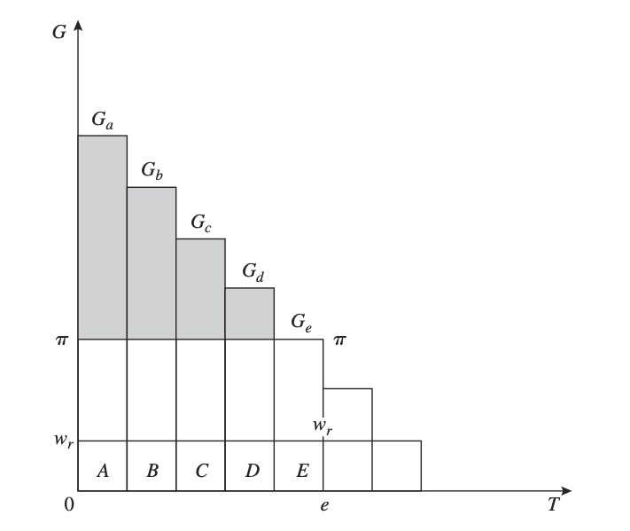
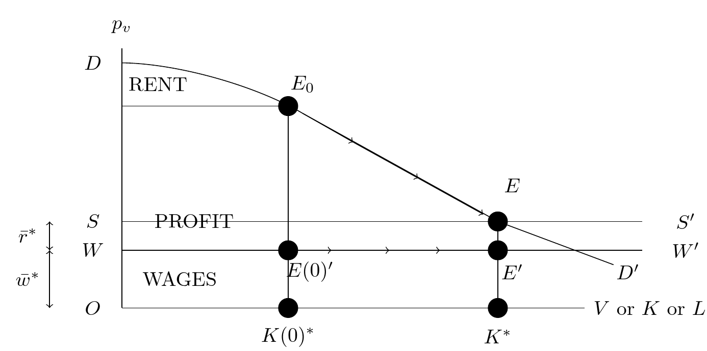

History of Economic Analysis¶
[toc]
Introduction¶
History of Economic Thought (HET) is today a very specialized field in economics pursued by a group of scholars who publish in technical journals and attend specialized conferences. The field is so special that only a few economics departments at major universities offer a HET course in their curriculum. If they do so, it is usually at the undergraduate level.1 This view of HET is not recent; according to the great late economist Paul Samuelson (1915-2009), "History of thought was a dying industry" already in 1935 when he began his graduate studies in Chicago. Samuelson also thought that the field of economics "burst to life" following "the monopolistic competition revolution, the Keynesian macro revolution, the mathematization revolution, and the econometric inference revolution," implying that what existed before these revolutions was not truly alive. More broadly, if economics is a cumulative scientific process, it implies that the present is "the latest and best final thing". If this view is correct, we should start from today's frontier to understand and study economics and not look back at past theories.
But is this view correct? Should we focus solely on the current frontier of economics, or is there value in exploring the history of economic ideas?
Another giant of economics, Joseph Schumpeter (1883-1950), who wrote the seminal "History of Economic Analysis" (1954), offers compelling reasons for studying HET:
Well, why do we study the history of any science? [...] First, [...] Unless that recent treatise itself presents a minimum of historical aspects, no amount of correctness, originality, rigor, or elegance will prevent a sense of lacking direction and meaning from spreading among the students or at least the majority of students.[...] Second, our minds are apt to derive new inspiration from the study of the history of science. [...] Third, the highest claim that can be made for the history of any science or of science in general is that it teaches us much about the ways of the human mind.
- Without historical context, students may lack a sense of direction and meaning in their studies.
- Engaging with the history of economics can inspire new ideas and insights.
- Studying HET teaches us about the workings of the human mind and the evolution of thought.
Consider, for example, the concept of utility maximization, a cornerstone of modern microeconomics. For a new student, this might seem like an abstract and arbitrary assumption. But by tracing its historical origins and development, we can better understand its rationale and limitations.
Moreover, in an era of increasing specialization and technical complexity in economics, the history of thought offers a route to a broader, more holistic understanding. As a graduate student, I recall a gifted colleague presenting a cutting-edge growth model that cleverly incorporated Adam Smith's ideas on specialization - ideas he gleaned from directly engaging with "The Wealth of Nations." This example illustrates how a generalist perspective, cultivated through the study of HET, can enrich and expand the scope of modern technical economics.
Studying HET also allows us to engage with primary sources and form our own interpretations, rather than relying solely on secondary accounts. While the writing style of earlier economists can be challenging for modern readers, directly grappling with original texts is invariably rewarding. I have put some of the original citations in the footnotes to reduce their number and make reading these notes somewhat lighter. I also think that the exercise of rendering some older ideas into modern mathematical language is useful and fun. On the one hand, the simplified mapping of the older writing into mathematical models (here following Samuelson) permits the gain of precision of simpler mechanisms and ideas and may identify logical errors in the arguments. On the other hand, it acknowledges the loss in complexity and depth, a characteristic of any model. In these notes, I aim to provide a curated selection of key original passages, complemented by explanations and mathematical interpretations that translate core ideas into the language of modern economics using mostly Paul Samuelson small models. As we progress chronologically, the need for mathematical elaboration will diminish, as the original works themselves increasingly employ formal methods.
The overarching goal, to borrow Schumpeter's phrase, is to survey the
intellectual efforts that men have made in order to understand economic phenomena or, which comes to the same thing, the history of the analytic or scientific aspects of economic thought.
We will trace the development of two principal strands of intellectual effort in economics: deduction (first using philosophy, then using mathematics) and induction (first using direct empirical observation, then using statistical analysis).
So let us embark on this fascinating journey through the history of economic analysis - exploring the key ideas, debates, and figures that shaped the evolution of economic thought, and in doing so, enriching our understanding of the economic forces that shape our world.
PART I: The Age of Political Economy¶
The first part of our course is dedicated to the era known as the Age of Political Economy, the precursor to what we now call Economics.
flowchart TD
subgraph ide0 [ETHICS]
A1(Aristotle 350BC) --> A2(Thomas Aquinas 1224-1274)
end
subgraph ide1 [POLITICAL ECONOMY]
subgraph ide11 [Mercantilists]
B1(Thomas Mun 1571-1641)
end
subgraph ide12 [Enlightenment Philosophers]
B2(Hume 1711-1776) --> M1{our first model: <br/> price-specie}
end
subgraph ide13 [Physiocrats]
B3(Richard Cantillon 1680-1734)
B4(Francois Quesnay 1694-1774)
end
subgraph ide21 [Classics]
B2 --> C1
B4 --> C1
C1(Adam Smith 1723-1790)
C2(David Ricardo 1772-1823)
B1 --- C1
C1 --> C2
C1 --> C3(John Stuart Mill 1806-1873)
C1 --> C4(Thomas Malthus 1766-1834)
M2{Second Model: <br/> Classical System}
end
subgraph ide22 [Marxism]
C2 -.-> D1(Karl Marx 1818-1883)
B4 -.-> D1
M3{Third Model: <br/> 2 sectors reproduction}
end
end
subgraph ide2 [ECONOMICS I]
end
ide0 ==> ide1
ide0 ==> ide1
ide1 ==> ide2
ide1 ==> ide2The figure above shows a tree diagram with some of the key thinkers we will encounter in Part I. The diamonds represent small mathematical models developed by Paul Samuelson to formalize specific ideas. While we won't delve into every author in equal depth, and you may not remember every detail, engaging with these original texts and models will provide a rich understanding of the foundations of economic thought. Models are oriented to economists while students with different background can skip them if they wish so.
Before diving into the Age of Political Economy, it's essential to understand the intellectual landscape that preceded it. We will begin by examining the ethical and philosophical foundations laid in ancient Greece, which had a lasting impact on economic thought. These early ideas, particularly those of Aristotle, addressed crucial questions such as fair prices, usury, and the role of economics in society. Aristotle's works, including "Politics" and "Nicomachean Ethics," provided a more explicit and systematic treatment of economic issues than earlier thinkers, setting the stage for centuries of debate and development.
Aristotle's ethical precepts on economic matters, such as the concept of a "fair price" and the prohibition of usury, became the bedrock of medieval economic thought in Europe. His ideas were later adopted and expanded upon by influential scholars like Thomas Aquinas, who integrated them into the framework of Christian theology and ethics.
Following this, we will briefly explore the ideas of a few key 17th-century thinkers who paved the way for the emergence of Political Economy. While these examinations will be brief, they will highlight the crucial intellectual shifts that set the stage for the birth of this new field of inquiry.
Ethics (350 BC - 1500 AD)¶
The two main economic questions we will focus on in this period are:
- What determines a fair price for a good in an exchange?
- What is the correct level of interest to charge on a loan?
Aristotle (350 BC) defines oikonomikos, the household's management, as having two components. The first component relates to the role of the husband (there was very little space for women in Ancient Greece beyond royalty) in managing the household and acquiring private property, which is composed of instruments (think of capital), and slaves (think of labor). This first component is natural (wealth-getting) ktetike, the art of becoming rich by producing goods and services. Let us read our first extract and marvel at the analytical capabilities of Aristotle.
Seeing then that the state is made up of households, before speaking of the state we must speak of the management of the household. The parts of household management correspond to the persons who compose the household, and a complete household consists of slaves and freemen. Now we should begin by examining everything in its fewest possible elements; and the first and fewest possible parts of a family are master and slave, husband and wife, father and children. We have therefore to consider what each of these three relations is and ought to be: I mean the relation of master and servant, the marriage relation, and thirdly, the procreative relation. And there is another element of a household, the so-called art of getting wealth, which, according to some, is identical with household management, according to others, a principal part of it; the nature of this art will also have to be considered by us. Politics Book I-III
In this passage from his "Politics," Aristotle is setting out his view of the proper management of a household, which he sees as the foundation of the state.
-
Aristotle asserts that the state is composed of households, so to understand the state, we must first understand household management.
-
He identifies the key relationships within a household: master and slave, husband and wife, and father and children. Aristotle believes each of these relationships has a natural hierarchy and proper roles that need to be understood.
-
Aristotle introduces the idea of the "art of getting wealth" or "chrematistike" in Greek. This is the economic aspect of household management.
-
There was debate even then about whether wealth-getting was the same as household management or just a part of it. Aristotle flags this as an issue to be investigated.
-
The mention of "slaves and freemen" and the "master and slave" relationship reflects the fact that slavery was a fundamental part of the ancient Greek household and economy.
Overall, Aristotle is laying out a framework for analyzing the household as an economic and social unit, and flagging key issues he will discuss, such as the proper roles and relationships within a household, and the place of wealth-getting or economic activity in household management. This focus on the household as the foundation of the state and economics is a distinctively Aristotelian perspective that would shape thinking for centuries.
Property is a part of the household, and the art of acquiring property is a part of the art of managing the household; for no man can live well, or indeed live at all, unless he be provided with necessaries. And as in the arts which have a definite sphere the workers must have their own proper instruments for the accomplishment of their work, so it is in the management of a household. Now instruments are of various sorts; some are living, others lifeless; in the rudder, the pilot of a ship has a lifeless, in the look-out man, a living instrument; for in the arts the servant is a kind of instrument. Thus, too, a possession is an instrument for maintaining life. And so, in the arrangement of the family, a slave is a living possession, and property a number of such instruments; and the servant is himself an instrument which takes precedence of all other instruments. Politics Book I-IV
In this passage, Aristotle further elaborates on the economic aspect of household management:
-
Property is a necessary part of the household, and acquiring property is a key aspect of household management, because property is necessary for life.
-
Just as workers need proper tools, a household needs proper instruments, which can be living (like slaves) or non-living (like tools).
-
Aristotle considers slaves to be "living possessions" or "living instruments," reflecting the deeply entrenched institution of slavery in Ancient Greece.
-
Slaves are seen as the most important instruments of a household, taking precedence over inanimate possessions.
This passage provides insight into Aristotle's view of the integral role of property and slaves in the Greek household economy. It's a stark reminder of how deeply the institution of slavery was woven into the social and economic fabric of the ancient world, and how this was justified philosophically.
Aristotle identifies a second method to accumulate wealth. This second method relates to the accumulation of wealth typically achieved through commerce or finance. This is an unnatural (wealth-getting) krematistike, the art of becoming rich from trade and usury, which he writes is the most hated.
There are two sorts of wealth-getting, as I have said; one is a part of household management, the other is retail trade: the former necessary and honourable, while that which consists in exchange is justly censured; for it is unnatural, and a mode by which men gain from one another. The most hated sort, and with the greatest reason, is usury, which makes a gain out of money itself, and not from the natural object of it. For money was intended to be used in exchange, but not to increase at interest. And this term interest, which means the birth of money from money, is applied to the breeding of money because the offspring resembles the parent. Wherefore of a modes of getting wealth this is the most unnatural. Politics Book I-X
In this passage, Aristotle distinguishes between two types of wealth acquisition:
-
Oikonomia: Household management, which involves acquiring goods to satisfy the needs of the household. This form of wealth-getting is seen as natural and morally acceptable.
-
Chrematistike: The art of retail trade or money-making, which involves the exchange of goods for profit. This form of wealth-getting is seen as unnatural and morally suspect.
Aristotle is particularly critical of usury, the practice of charging interest on loans. He argues that money is meant to be a medium of exchange, not a means of generating more money. The Greek word for interest, "tokos," literally means "birth" or "offspring," and Aristotle uses this metaphor to argue that charging interest is unnatural, as it makes money "breed" money, like a living thing.
This passage reflects several key ideas in Aristotelian economic thought:
- The distinction between the "natural" economy of the household and the "unnatural" world of trade and money-making.
- The ethical suspicion of trade and profit-making as a source of wealth.
- The idea that money is sterile and should not bear interest, an idea that would profoundly influence medieval Christian thought on usury.
Aristotle's views here reflect the economic realities of the largely agrarian, non-commercial society of ancient Greece, and his philosophical commitment to the idea that everything, including economic activities, should follow "natural" purposes.
This is a very negative view of trade and financial activities, which of course existed in Antiquity. Aristotle does not like the idea that in a trade there might be a surplus, namely one of the party that gains more. The part on trade merits further attention for Aristotle's message is that there should be justice in exchange. Drawing on the commutative principle, Aristotle argued for a "just price" - that you should give in value what you receive in value. He also mention a unit, demand, that can be identified as the use value, the ability to satisfy a specific need, that Adam Smith will refer to 2000 years later. He also recognized that money was just a convention, neither good nor bad in itself. Here
For it is not two doctors that associate for exchange, but a doctor and a farmer, or in general people who are different and unequal; but these must be equated. This is why all things that are exchanged must be somehow comparable. It is for this end that money has been introduced, and it becomes in a sense an intermediate, for it measures all things, and therefore the excess and the defect-how many shoes are equal to a house or to a given amount of food. The number of shoes exchanged for a house (or for a given amount of food) must therefore correspond to the ratio of builder to shoemaker. For if this be not so, there will be no exchange and no intercourse.[...] All goods must therefore be measured by someone thing, as we said before. Now this unit is in truth demand, which holds all things together (for if men did not need one another's goods at all, or did not need them equally, there would be either no exchange or not the same exchange); but money has become by convention a sort of representative of demand. The Nichomachean Ethics, Book V-5
These negative ethical views on an exchange, if the exchange is not executed at a fair price, and on interest rates, will have long-lasting consequences. For centuries scholars will try to explain how prices are determined, if these prices are fair, and why it is just to charge an interest rate. In the ideas of economics, there will be not much progress for 1500 years. While Western Europe descended into the Dark Ages in the 5th-6th C., the doctrines of classical philosophy were resurrected by Islamic scholars. Through them, the 13th and 14th century Scholastic theologians recovered classical Greek works and brought their thinking (notably Aristotle) back into the mainstream of European intellectual life. Here, the classic reference is Thomas Aquinas (1224-1274). In his monumental Summa Theologica, he represents the idea that gain by trade is seen as deplorable, maybe even in a stronger sense as it can be, and even a sin. In his words:
We must now consider those sins which relate to voluntary commutations. First, we shall consider cheating, which is committed in buying and selling: secondly, we shall consider usury, which occurs in loans. In connection with the other voluntary commutations no special kind of sin is to be found distinct from rapine and theft. Under the first head there are four points of inquiry: (1) Of unjust sales as regards the price; namely, whether it is lawful to sell a thing for more than its worth? (2) Of unjust sales on the part of the thing sold; (3) Whether the seller is bound to reveal a fault in the thing sold? (4) Whether it is lawful in trading to sell a thing at a higher price than was paid for it? Summa Theologica - By Sins Committed in Buying and Selling Q77, T. Aquinas
We must now consider the sin of usury, which is committed in loans: and under this head there are four points of inquiry: (1) Whether it is a sin to take money as a price for money lent, which is to receive usury? (2) Whether it is lawful to lend money for any other kind of consideration, by way of payment for the loan? (3) Whether a man is bound to restore just gains derived from money taken in usury? (4) Whether it is lawful to borrow money under a condition of usury?[...] I answer that, To take usury for money lent is unjust in this is to sell what does not exist, and this evidently leads to inequality which is contrary to justice. Summa Theologica - By Sins Committed in Loans Q78, T. Aquinas
These views echo Aristotle and had implications for the development of trade. And again, lending for interest was seen as an aberration, having long-lasting implications for the development of finance. There were attempts to overcome this logic by arguing that interests were remunerating time (but time is a common good) or compensation for a default/accident probability, damnum emergens. Slowly Europe was beginning to crawl out of the Dark Ages. Trade was re-emerging, and with it came a new class of people - merchants, with fortunes - who seemed to have no assigned place in the traditional feudal order. And so some Scholastics deployed their new knowledge to try to make sense of this strange new world of markets and money and take different views than Aquinas.
These restrictive attitudes began to change with the Renaissance and the rise of a new philosophical approach based on reason and empiricism. A momentous shift was underway, from the religious and ethical concerns of the medieval world to a new paradigm that would give birth to Political Economy...
flowchart TD
A[Aristotelian Philosophy] --> B[Aquinas & The Scholastics]
subgraph Ethics
E[Restrictions on Trade & Usury]
end
B --> E
E --RUPTURE--- C[Scientific Revolution]
C ==> H[POLITICAL ECONOMY]Interlude: From Ethics to Reason, or from Oikonomikos to Political Economy¶
Let me take a small detour from the HET and present a small series of extracts from Renaissance thinkers. A sharp turning away from the medieval tradition that put God and the afterlife at the center of everything occurred during the 15th century. This new vision is revealed with flamboyant confidence by Pico della Mirandola (1463-1494) a Florentine thinker who wrote
We (God) have made you a creature neither of heaven nor of earth, neither mortal nor immortal, in order that you may, as the free and proud shaper of your own being, fashion yourself in the form you may prefer. It will be in your power to descend to the lower, brutish forms of life; you will be able, through your own decision, to rise again to the superior orders whose life is divine. (the man answers) Oh unsurpassed generosity of God the Father, oh wondrous and unsurpassable felicity of man, to whom it is granted to have what he chooses, to be what he wills to be! On the Dignity of Man (1480)
According to this view, man is not merely the measure of all things as the Greek Sophist Protagoras had proclaimed in the fifth century. He is, in fact says Pico, more than mortal. He is unlimited by nature. He is entirely free to shape himself and to acquire whatever he wants. Please observe too that it is not his reason that will determine human actions but his will alone, free of the moderating control of reason.
Another Florentine, Niccolo Machiavelli moved further in the same direction for him:
...because fortune is a woman, and if you wish to keep her under it is necessary to beat and ill-use her; and it is seen that she allows herself to be mastered by the adventurous rather than by those who go to work more coldly. The Prince (1532)
Machiavelli is basically saying that we can control our own fate.
Francis Bacon, although influenced by Machiavelli, tilts the balance towards reason. He urges human beings to employ their reason to force nature to give up its secrets. To master nature in order to improve man's material life. He assumes that such a course will lead to progress and the general improvement of the human condition. That sort of thinking lay at the heart of the scientific revolution and remains the faith upon which modern science and technology rests. A couple of other English political philosophers, Hobbs and Locke, applied a similar novelty and modernity to the sphere of politics. They based their understanding on the common passions of man for comfortable self-preservation and discovering something they called natural rights that belonged to a man either as part of nature or as the gift of a benevolent and a reasonable god. Man was seen as a solitary creature, not inherently a part of society. In that environment of emancipation where the speculative method applies and rational deductive procedure is applied to an object of study, some wanted to emancipate economics from the individual sphere and project it also to public activity.
Before Political Economy¶
In the 17th and 18th centuries, a diverse group of thinkers - philosophers, public servants, merchants, and even physicians - sought to understand the economy in a more systematic and analytical way. Moving beyond the narrow ethical concerns of earlier periods, they asked new questions about the sources of national wealth, the effects of government intervention, the role of money and trade, and the flows of goods and money between sectors. This marked the birth of Political Economy as a distinct field of inquiry. One of the first question regarded foreign trade.
Mercantilism¶
In the 17th century, one puzzling question was the performance of the Dutch. Holland was a small country that had only come into existence in the 1580s after a revolt against its Spanish Hapsburg rulers. But it had managed to spectacularly transform itself into one of the wealthiest countries in the world, with outposts that stretched across the globe, from Nagasaki to New Amsterdam, from the Artic Circle to South Africa, and whose citizens enjoyed probably the highest standard of living of that time. Holland had a small population, very little land, and virtually no natural resources. However, Holland maintained a favorable balance of trade with foreign countries: they exported expensive 'high-value' manufactured goods (notably finished cloth and iron goods like tools, guns, etc.) and only imported cheap 'low-value' primary commodities (raw wool and iron ore, inputs needed for their industries). That meant foreign money (gold & silver) constantly flowed into Holland. The 'Mercantilist' policy formula was quickly devised: Export as much as possible and import as little as possible. Make sure your exports are high-value goods – luxuries, manufactures – which will bring in a lot of money. If you must import, import only essential low-value goods that are absolutely necessary for your industries – that is, only raw materials and other basic necessities you simply cannot find at home.
The Mercantilists expected - or demanded - that the government take an active role in this, and make "protectionism" a central part of government policy. The government was at various times by different authors called upon to forbid or restrict anybody from taking money out of the country by all sorts of controls and laws, impose tariffs and quotas to discourage imports and hand out export subsidies ('bounties') to domestic exporters. In an extreme version of mercantilism, Bullionism, Gold is identified as the primary form of wealth and the primary policy prescription is to run an external surplus. You could run deficits with countries that were providing raw materials if it permitted to run surpluses with others. An important mercantilist was Thomas Mun (1571-1641) who was for a time the director of the East India Company.
Although a Kingdom may be enriched by gifts received, or by purchase taken from some other Nations, yet these things are uncertain and of small consideration when they happen. The ordinary means therefore to encrease our wealth and treasure is by Forraign Trade, wherein we must ever observe this rule: to sell more to strangers yearly than we consume of theirs in value. For suppose that when this Kingdom is plentifully served with the Cloth, Lead, Tinn, Iron, Fish and other native commodities, we doe yearly export the overplus to forraign Countries to the value of twenty two hundred thousand pounds; by which means we are enabled beyond the Seas to buy and bring in forraign wares for our use and Consumptions, to the value of twenty hundred thousand pounds; By this order duly kept in our trading, we may rest assured that the Kingdom shall be enriched yearly two hundred thousand pounds, which must be brought to us in so much Treasure; because that part of our stock which is not returned to us in wares must necessarily be brought home in treasure. England Treasure by Forraign Trade - Chapter II, The means to enrich this Kingdom, and to encrease our Treasure, T. Mun
This view favors the merchants, hence the name mercantilism, which basically prescribes protectionism, and led to the creation of great national companies such as the British East India Company in 1600. They also recommended that the government actively help domestic private businessmen set up high-value import-substitution and export-oriented industries. The crown was urged to subsidize these industries, whether directly or indirectly. Infrastructure investment, like roads and ports, to facilitate the export trade, was to be encouraged. In order to minimize "destructive competition" at home, many Mercantilists believed that charter companies had a better chance of succeeding abroad if they were granted a charter with exclusive government-guaranteed monopolies over particular areas of industry and trade. The Mercantilist emphasis on trade surpluses and government intervention would soon face challenges from a new generation of thinkers who saw free trade and market forces as the keys to national prosperity.
Prices and the quantity theory¶
Quickly reverse thinking occurred: towards the end of the 17th century, the idea that state intervention was harmful to economic development started to spread. Economic thinking also started to be more analytical, for example, the effort to understand how prices were determined returned in vogue leaning towards the explanation that prices were determined by production more than demand factors. - Intrinsic value, or fundamental value is the price as the value of production although market price can differ depending on demand factors. Here is what Richard Cantillon (1680-1734) has to say about the determination of prices:
If two Acres of Land are of equal goodness, one will feed as many Sheep and produce as much Wool as the other, supposing the Labour to be the same, and the Wool produced by one Acre will sell at the same price as that produced by the other. If the Wool of the one acre is made into a suit of coarse Cloth and the Wool of the other into a suit of fine Cloth, as the latter will require more work and dearer workmanship it will be sometimes ten times dearer, though both contain the same quantity and quality of Wool. [...] The price of a pitcher of Seine Water is nothing, because there is an immense supply which does not dry up; but in the Streets of Paris people give a sou for it—the price or measure of the Labour of the Water carrier. By these examples and inductions it will, I think, be understood that the Price or intrinsic value of a thing is the measure of the quantity of Land and Labour entering into its production, having regard to the fertility or produce of the Land and to the quality of the Labour. But it often happens that many things which have actually this intrinsic value are not sold on the Market according to that value: that will depend on the Humours and Fancies of men and on their consumption.
Essay on the Nature of Commerce Part I, Chapter X
We are far from the ethical preoccupations of earlier times. Still, the analytical effort to understand how prices are determined is remarkable. prices are determined by the quantity of land and labor which are seen as the two production factors. However, the degree to which people want or like a good might also matter. The intellectual effort is also turned to "macro" phenomena like the level of activity, and here the deduction of the effects of the quantity of Money, at that time backed by gold, on the level of activity are deemed to be important. Again Cantillon:
If mines of gold or silver be found in a State and considerable quantities of minerals drawn from them, the Proprietor of these Mines, the Undertakers, and all those who work there, will not fail to increase their expenses in proportion to the wealth and profit they make: they will have over and above what they need to spend. All this money, whether lent or spent, will enter into circulation and will not fail to raise the price of products and merchandise in all the channels of circulation which it enters. Increased money will bring about increased expenditure and this will cause an increase in Market prices in the highest years of exchange and gradually in the lowest.[...] Mr. Locke lay it down as a fundamental maxim that the quantity of produce and merchandise in proportion to the quantity of money serves as the regulator of Market price [...] If the increase in actual money comes from Mines or gold or silver in the State the Owner of these Mines, the Adventurers, the Smelters, Refiners, and all other workers will increase their expenses in proportion to their gains. They will consume in their households more Meat, Wine, or Beer than before, will accustom themselves to wear better cloaths, finer linen, to have better furnished Houses and other choicer commodities. They will consequently give employment to several Mechanicks who had not so much to do before and who for the same reason will increase their expenses: all this increase in Meat, Wine, Wool, etc.[...] diminishes of necessity the share of the other inhabitants of the State who do not participate at first in the wealth of the Mines in question. The altercations of the market, or the demand for Meat, Wine, Wool, etc., being more intense than usual, will not fail to raise their prices. These high prices will determine the Farmers to employ more land to produce them in another year: these same Farmers will profit by this rise of prices and will increase the expenditure of their Families like the others.
Essay on the Nature of Commerce Part II, Chapter VI, R. Cantillon
This line of reasoning can be cast in our first equation, the famous $$ M*\gamma = P*Q $$
where M is money, \(\gamma\) velocity, P price level, and Q output (the level of activity). The first algebraic rendering of this equation is probably due to irving Fisher in 1911. Reading the passage above, we understand that Cantillon debates on what adjusts and when. He says that an increase in Money Supply will ultimately result in an increase in Prices, but will also increase activity in the short run. We will use this equation in our first model just below.
Free Trade: The Price-Specie adjustment mechanism¶
The Price-Specie Flow Mechanism, a self-correcting process for trade imbalances, is one of the most influential economic ideas put forward by the Scottish philosopher David Hume (1711-1776). This elegant theory, which demonstrated how market forces could automatically balance trade between nations without the need for government intervention, stood in stark contrast to the Mercantilist policies of the time. The Price-Specie Flow Mechanism's significance and lasting impact on economic thought make it worthy of special attention. To better understand its workings, we will explore a "modern" economic model of the mechanism, drawing on the exposition by renowned economist Paul Samuelson. Before delving into the model, let us first consider Hume's original description of the concept:
IT is very usual, in nations ignorant of the nature of commerce, to prohibit the exportation of commodities, and to preserve among themselves whatever they think valuable and useful[...]It is well known to the teamed, that the ancient laws of ATHENS rendered the exportation of figs criminal; that being supposed a species of fruit so excellent in ATTICA, that the ATHENIANS deemed it too delicious for the palate of any foreigner[...] The same jealous fear, with regard to money, has also prevailed among several nations; and it required both reason and experience to convince any people, that these prohibitions serve to no other purpose than to raise the exchange against them, and produce a still greater exportation.... But there still prevails, even in nations well acquainted with commerce, a strong jealousy with regard to the balance of trade, and a fear, that all their gold and silver may be leaving them...Suppose four-fifths of all the money in BRITAIN to be annihilated in one night, and the nation reduced to the same condition, with regard to specie, as in the reigns of the HARRYS and EDWARDS, what would be the consequence? Must not the price of all labour and commodities sink in proportion, and every thing be sold as cheap as they were in those ages? What nation could then dispute with us in any foreign market, or pretend to navigate or to sell manufactures at the same price, which to us would afford sufficient profit? In how little time, therefore, must this bring back the money which we had lost, and raise us to the level of all the neighbouring nations? Where, after we have arrived, we immediately lose the advantage of the cheapness of labour and commodities; and the farther flowing in of money is stopped by our fulness and repletion.
Political Essays - Of the balance of trade, Hume
In Hume's description, we can readily identify the key components of the re-equilibrating mechanism. When a country experiences a trade surplus, it receives an inflow of gold as payment for its exports. This influx of gold increases the money supply within the country, which, in turn, leads to a rise in prices. Conversely, a country with a trade deficit sees an outflow of gold, reducing its money supply and causing prices to fall.
The resulting changes in prices have an impact on the competitiveness of each country's goods in international markets. As prices rise in the surplus country, its exports become more expensive and less attractive to foreign buyers. Simultaneously, the deficit country's falling prices make its goods more competitive and appealing to international consumers. This shift in relative prices encourages exports from the deficit country and discourages imports, while the opposite occurs in the surplus country.
Over time, these adjustments in competitiveness serve to rebalance trade between the two countries. The surplus country's exports decrease, and its imports increase, while the deficit country experiences a growth in exports and a reduction in imports. This automatic rebalancing process, driven by market forces, ultimately brings the trade relationship back into equilibrium.
The implications of Hume's Price-Specie Flow Mechanism are significant, as they provide a strong argument for the benefits of free trade. By allowing market forces to operate without interference, countries can naturally correct trade imbalances and maintain a healthy, mutually beneficial exchange of goods and services. This stands in sharp contrast to the Mercantilist policies of the previous century, which advocated for government intervention, protectionism, and the hoarding of precious metals.
To further clarify the workings of the Price-Specie Flow Mechanism, let us now turn to a simple mathematical exposition designed by Paul Samuelson. This modern economic model will help us better understand the dynamics at play and the key variables involved in the re-equilibrating process.
The price-specie model statement¶
-
Let \(P\) stand for gold price(s) at home, \(P^{*}\) for price(s) abroad
-
\(M^{*}\) stands for foreign (gold) money supply
-
\(M\) for domestic gold supply
-
\(Q\) and \(Q^{*}\) for the total outputs at home and abroad
-
Ignoring capital movements, let \(B\) be the gold value of the balance of trade – the surplus of exports over imports if positive, or deficit if negative.
represents the idea that the trade balance improves if the domestic economy is more competitive, namely, goods cost less than abroad.
is the famous quantity theory of Money. The central question (see Hume and Cantillon quotes above) is when \(M\) changes, what adjusts (and when)? \(P\) or \(Q\) or \(\gamma\)? For Hume, in this citation but not in other parts of his writings, it is \(P\). $$ B =\dot{M}=-\dot{M}^{*} $$
represents the outflow of money (gold) to pay the deficit, or the inflow that corresponds to a surplus. $$ M+M^{*} =\bar{M} $$ represents the equilibrium in the total amount of Gold in the system (World).
So let us collect all the equations of our model: $$ \begin{aligned} B &=f\left(\frac{P}{P^{}}\right) \ PQ &=\gamma M \ P{*}Q{} &=\gamma M^{} \ B &=\dot{M}=-\dot{M}^{} \ M+M^{} &=\bar{M}\end{aligned} $$ We have an aggregate equation per region that links prices, output, and money. An equation that represents the trade balance, an equation that relates the trade balance to payments (the current account) and the aggregate (two regions sum) supply of Money. The reasoning of Hume according to the system can be spelled out as follows: if \(M\) decreases suddenly (he wants to describe the outflow of gold), then \(P\) will fall, and if \(Q\) is maintained, \(B\) will become positive as the relative price decrease makes the country more competitive reversing the initial outflow of money. So, let's solve the system and get an equation for the flow of money (in equilibrium): $$ \dot{M}=f\left(\frac{MQ^{}}{\left(\bar{M}-M\right)Q}\right) $$
The price-specie model steady state¶
In Stationary - Steady State (think of the Long Run when the adjustment is terminated): $$ B=f(1)=0 $$ $$ f\left(\frac{MQ^{}}{\left(\bar{M}-M\right)Q}\right)=0 $$ Therefore the solution for \(M\) in the long-run is: $$ M{LR}=\frac{Q}{Q{}+Q}\bar{M}, $$ which shows that in the Long Run, the quantity adjusts towards a constant proportion given by the production level (taken as given). Consider now the dynamic adjustment assuming an initial condition \(M_0\) different from the long run value. If \(M_0<M^{LR}\), namely, the stock of gold is below the long-run value, the relative price ratio is \(\frac{MQ^{*}}{\left(\bar{M}-M\right)Q}<1\) which favors exports and imply an external surplus with an accumulation of gold: \(\dot{M}>0\). The shape of the adjustment depends on the properties of \(f\) but it occurs until the relative price reaches unity. If \(M_0>M^{LR}\) the adjustment occurs through trade deficits. You can try to plot what just described using some specific functional form, for example: $$ f(P/P^*) = (P/P*)- 1, $$
where \(\alpha< 1\). Here is a simulation from two different starting points, one corresponding to a surplus and one to a deficit.
We just described a long-run adjustment without friction, and the mathematical model gives a neat representation and permits an intellectual check of the reasoning.
As Schumpeter used to put it, we can applaud Hume’s performance in specifying a self-correcting mechanism that impressed people for two hundred years." P.A. Samuelson
One caveat is the focus on the long-run, as in reality the short run might be more complex. In fact, Hume was very aware that the short run was important:
Accordingly we find, that, in every kingdom, into which money begins to flow in greater abundance than formerly, every thing takes a new face; labour and industry gain life; the merchant becomes more enterprising, the manufacturer more diligent and skilful, and even the farmer follows his plough with greater acrity and attention. This is not easily to be accounted for, if we consider only the influence which a greater abundance of coin has in the kingdom itself, by heightening the price of commodities, and obliging every one to pay a greater number of these little yellow or white pieces for every thing he purchases. And as to foreign trade, it appears, that great plenty of money is rather disadvantageous, by raising the price of every kind of labour. To account, then, for this phenomenon, we must consider, that, though the high price of commodities be a necessary consequence of the encrease of gold and silver, yet it follows not immediately upon that encrease; but some time is required before the money circulates through the whole state, and makes its effect be felt on all ranks of people. At first, no alteration is perceived; by degrees the price rises, first of one commodity, then of another; till the whole at last reaches a just proportion with the new quantity of specie which is in the kingdom. In my opinion, it is only in this interval or intermediate situation, between the acquisition of money and rise of prices, that the encreasing quantity of gold and silver is favourable to industry.
Hume Political Essays - Of Money, D. Hume
In the chapter on Money, Hume acknowledges a short-run effect on economic activity that he did not consider in the price-specie adjustment mechanism. Samuelson extends the model to incorporate this additional insight, but for the sake of brevity, we will not delve into the details here. Instead, let us pause for a moment to reflect on the process we just undertook. To be precise, it was Samuelson who mapped Hume's theory, originally expressed in words, into mathematical form. This exercise has taught us that we can indeed scrutinize the reasoning behind a theory, but doing so requires explicitly spelling out a set of assumptions.
However, this is where a potential pitfall lies: if we fail to constantly keep in mind the limited scope of reality that our assumptions imply, we risk misusing the model. For instance, we might overlook the fact that the activity level can be influenced by current imbalances through channels other than competitiveness, or that the described adjustment process implies that prices differ across countries during the transition period. It is crucial to ask ourselves whether these implications are reasonable. If they are not, then we are left with a result that hinges on a flawed hypothesis.
The economy as a circular system - input/output¶
The last pre-Classic movement we will mention, the Physiocratic school, might be the first "true" school, with Francois Quesnay (1694-1774) as the central figure. Quesnay and his disciples had very innovative ideas, for example, they introduced the notions of productive and unproductive labour, by means of which the real source of wealth was found in the net product obtained by applying labour to land. You can think of a production function where the special factor of production is land and a second factor of production, productive labour, complements the land and results in value-added, produit net. Another type of labour, the one not applied to land would be unproductive in their view: sterile. Why would manufacturing and commerce be sterile sectors? Their arguments were grounded in metaphysics. They differentiated between the ordre naturel (natural order, or the social order dictated by nature's laws) and the ordre positif (positive order, or the social order dictated by human ideals). The idea of interdependence among the various productive sectors and the related idea of macroeconomic equilibrium was extremely innovative by representing the economic exchanges as a circular flow of money and goods among the various economic sectors. Also the displacement of scientific interest from the stock of wealth to the flow of net product is of great importance. Finally, they championed the idea of laissez-faire, namely minimizing the state intervention and the impot unique, one single tax to finance a minimal government. Their representation of the flows between sectors was rendered in the famous Tableau Economique , a primordial Input-Output System:
graph LR;
A[Productive Class] -- 1 milliard --> B[Non-Productive Class]
A -- 2 milliards --> A
B -- 2 milliards --> A
A -- 2 millard --> C[Distributive Class]
C -- 1 milliard --> A
C -- 1 milliard --> B-
The productive class pays two milliard in rent to the distributive class and one milliard to the sterile class to buy manufactured articles and spends two milliard within the agricultural sector to buy raw materials, wage goods, and means of production.
-
The distributive class will spend its income in the following way: one milliard to the sterile class and the other one milliard to the productive class to buy, respectively, manufactured goods and agricultural products.
-
The sterile class, which has received two milliard, half from the distributive class and half from the farmers, will spend it all on the productive class to buy its inputs and necessary consumer goods.
-
The three milliard that the productive class has spent outside the agricultural sector will come back to it; so that the cycle can begin again. He viewed this system as a natural order and therefore laissez-faire would be best. A second implication was to simplify tax system and create a unique tax on the produit net. And here a picture of the original one published in 1758:

Political Economy¶
The industrial revolution that started in the United Kingdom in the second part of the 18th century strongly impacted economic thinking. In 1776, Adam Smith (1723-1790), a former professor of Moral Philosophy at the University of Glasgow, published the Wealth of Nations (WoN). The WoN is usually identified as the first "textbook" in Political Economy, composed of 5 books on the workings of a Society of Perfect Liberty. It represents a synthesis that organized economic thought for the following 40 years. While it is usually identified with the "invisible hand," its contents are better described as an overarching effort to conceptualize the forces and the social organization that result in the phenomena of economic growth. Smith's treatise went against the British laws that restricted internal and external commerce, many of which had been introduced during the Mercantilist era, and proposed a new reformed system of 'natural liberty.' The latter required the careful exposition of the economic principles underlying the system.
Adam Smith¶
While "The Wealth of Nations" is sometimes criticized for being a messy and inconsistent book, I believe that this view is misguided. Although there are indeed some inconsistencies, such as in Smith's explanation of what determines prices, the overall logic of his overarching argument about how nations prosper is remarkably coherent and insightful2.
At its core, Smith's theory posits that the division of labor and the consequent increase in productivity are the central factors driving the wealth of nations. By breaking down production processes into specialized tasks, workers can become more skilled and efficient, leading to higher output and economic growth. However, Smith recognizes that for this increased production to be sustainable, there must be a sufficiently large market to absorb the goods and services produced.
This brings us to the importance of scale in Smith's analysis. The size of the market, which is influenced by factors such as geography and transportation, plays a crucial role in determining the extent to which the division of labor can be implemented. A larger market allows for greater specialization and economies of scale, leading to higher productivity and economic growth.
In addition to market size, Smith identifies demography as another critical factor in the growth of living standards. A larger population provides a greater pool of labor, which can be employed in increasingly specialized roles. This, in turn, allows for a more extensive division of labor and the associated benefits of increased productivity.
A key implication of the division of labor is the necessity of trade. As workers become more specialized, they rely on the exchange of goods and services to meet their diverse needs. This realization leads Smith to attempt to postulate a theory of value or price determination, which is essential for understanding how trade operates and how prices are set in the market.
To better understand Smith's arguments, let us focus on a schematic view of Book 1 of "The Wealth of Nations," which lays out the foundational principles of his economic theory.
graph TD
A[Labor as the central productive input] --> B(division of labor increases its productivity)
C(The division of labour is a consequence of truck, barter and exchange market) --> B
D[The extent of the division of labour depends on the size of the market]-->B
B --> E[The specialization brought by the division of labor caused the appearence of money to facilitate exchange]
E --> F(Nominal prices and real Prices)
F --> G(The real price is the content of labor of the commodities)
G --> H(Natural and market price of commodities)
H --> L(Wages)
H --> K(Profits)
H --> M(Rents)
Let us read a few passages on labor specialization.
To take an example, therefore, from a very trifling manufacture; but one in which the division of labour has been very often taken notice of, the trade of the pin-maker; a workman not educated to this business[...] could scarce, perhaps, with his utmost industry, make one pin in a day, and certainly could not make twenty. [...]But in the way in which this business is now carried on, not only the whole work is a peculiar trade, but it is divided into a number of branches, of which the greater part are likewise peculiar trades. One man draws out the wire, another straights it, a third cuts it, a fourth points it, a fifth grinds it at the top for receiving the head; to make the head requires two or three distinct operations; to put it on is a peculiar business, to whiten the pins is another; it is even a trade by itself to put them into the paper; and the important business of making a pin is, in this manner, divided into about eighteen distinct operations[...]Those ten persons, therefore, could make among them upwards of forty-eight thousand pins in a day.
This great increase of the quantity of work which, in consequence of the division of labour, the same number of people are capable of performing, is owing to three different circumstances; first, to the increase of dexterity in every particular workman; secondly, to the saving of the time which is commonly lost in passing from one species of work to another; and lastly, to the invention of a great number of machines which facilitate and abridge labour, and enable one man to do the work of many.
Wealth of Nations - Of the Division of Labour chapter I, A. Smith
Smith identifies in the division of labor three consequences that increase productivity. First, each worker becomes more skilled in the specific task. Second the process of production is accelerated. Finally, it incentivizes the invention of machines/instruments to perform a specific task. Growth and the living standard increase occur through productivity growth[^nfwon2]. But why would we specialize to produce more? Here, the explanation is central to the system of liberty: human nature that follows its own interest. This view reflects Smith's beliefs on man as an individual whose morality springs from the hedonic calculus.
This division of labour, from which so many advantages are derived, is not originally the effect of any human wisdom, which foresees and intends that general opulence to which it gives occasion. It is the necessary, though very slow and gradual consequence of a certain propensity in human nature which has in view no such extensive utility; the propensity to truck, barter, and exchange one thing for another.
It is not from the benevolence of the butcher, the brewer, or the baker that we expect our dinner, but from their regard to their own interest. We address ourselves, not to their humanity but to their self-love, and never talk to them of our own necessities but of their advantages.
Wealth of Nations - Of the Principle which gives occasion to the Division of Labour - chapter II
Finally for this process of specialization to happen you need a market of a certain scale3.
Regarding the determination of prices, or the value of goods exchanged, I find little innovation in Smith's work compared to Cantillon's earlier contributions. Smith distinguishes between value in use, which is linked to what we would call the demand price, and value in exchange4. He presents four different theories of value: the labor-commanded5 theory, the labor-embodied theory, the adding-up (cost of production 6) theory, and a disutility of work theory. While this variety of theories might confuse the reader, Smith ultimately favours the cost of production theory and dedicates the remainder of Book I to providing theories for determining the components of natural price.
However, if value represents the price of production inputs, the question arises: how are these inputs determined? Specifically, what determines the wage, the rate of profit, and the rent? What factors influence the natural price levels? Smith proposes the following mechanisms to determine the "natural" price of each of the three inputs. For wages, he observes that employers have greater bargaining power than workers and that unions are essentially prohibited. Furthermore, workers are paid weekly and, therefore, cannot resist living without wages for an extended period. Consequently, in the long run, wages tend towards the subsistence level, which allows for reproduction but not much more—a theory that Malthus will later refine. Smith concedes that economic progress can improve wages over time and acknowledges that labor is not homogeneous, implying that wages are not uniform across all occupations. Factors such as the difficulty of a job, the skills required by a profession, or even chance can lead to wage disparities. In modern terms, he nearly specifies a Mincerian equation. The other two natural prices—profit and rent—are not explained in great detail, although the profit rate is understood as a reward for risk, and rent is seen as a residual value after paying wages and interest. Finally, Smith argues that competition (the system of perfect liberty, which cannot be taken for granted, as he writes7) causes market prices to tend toward their natural level, although they can fluctuate below and above the natural level implied by the natural level of input prices. Smith's exposition will remain a central part of the classical theory of distribution until the marginalist revolution.
There is in every society or neighbourhood an ordinary or average rate both of wages and profit in every different employment of labour and stock...There is likewise in every society or neighbourhood an ordinary or average rate of rent... These ordinary or average rates may be called the natural rates of wages, profit, and rent, at the time and place in which they commonly prevail. When the price of any commodity is neither more nor less than what is sufficient to pay the rent of the land, the wages of the labour, and the profits of the stock employed in raising, preparing, and bringing it to market, according to their natural rates, the commodity is then sold for what may be called its natural price[...]. The actual price at which any commodity is commonly sold is called its market price. It may either be above, or below, or exactly the same with its natural price. The market price of every particular commodity is regulated by the proportion between the quantity which is actually brought to market, and the demand of those who are willing to pay the natural price of the commodity, or the whole value of the rent, labour, and profit, which must be paid in order to bring it thither. Such people may be called the effectual demanders, and their demand the effectual demand; since it may be sufficient to effectuate the bringing of the commodity to market. It is different from the absolute demand. A very poor man may be said in some sense to have a demand for a coach and six; he might like to have it; but his demand is not an effectual demand, as the commodity can never be brought to market in order to satisfy it.
When the quantity of any commodity which is brought to market falls short of the effectual demand, all those who are willing to pay the whole value of the rent, wages, and profit, which must be paid in order to bring it thither, cannot be supplied with the quantity which they want. Rather than want it altogether, some of them will be willing to give more. A competition will immediately begin among them, and the market price will rise more or less above the natural price, according as either the greatness of the deficiency, or the wealth and wanton luxury of the competitors, happen to animate more or less the eagerness of the competition. [...]When the quantity brought to market exceeds the effectual demand, it cannot be all sold to those who are willing to pay the whole value of the rent, wages, and profit, which must be paid in order to bring it thither. Some part must be sold to those who are willing to pay less, and the low price which they give for it must reduce the price of the whole. The market price will sink more or less below the natural price, according as the greatness of the excess increases more or less the competition of the sellers, or according as it happens to be more or less important to them to get immediately rid of the commodity. [...]When the quantity brought to market is just sufficient to supply the effectual demand, and no more, the market price naturally comes to be either exactly, or as nearly as can be judged of, the same with the natural price.
All the different parts of its price will soon sink to their natural rate, and the whole price to its natural price. The natural price, therefore, is, as it were, the central price, to which the prices of all commodities are continually gravitating. Different accidents may sometimes keep them suspended a good deal above it, and sometimes force them down even somewhat below it. But whatever may be the obstacles which hinder them from settling in this centre of repose and continuance, they are constantly tending towards it...A monopoly granted either to an individual or to a trading company has the same effect as a secret in trade or manufactures. The monopolists, by keeping the market constantly understocked, by never fully supplying the effectual demand, sell their commodities much above the natural price, and raise their emoluments, whether they consist in wages or profit, greatly above their natural rate...
Smith also writes in Book II on capital accumulation, which goes hand in hand with the division of labor. In this part, he remarks that Money is not to be confounded with revenue or, in more modern terms, output, but he considers it as part of the capital stock. Most notably, he recognizes the important role of Banks in financing the economy, allowing production to increase and, therefore, the reason for banks to receive a "legal" interest rate8. Finally in Book IV, Smith presents the list of tasks that the sovereign should have: police, army, justice, and remarkably public work, where he seems to foresee the theory of public goods.
...First, the duty of protecting the society from violence and invasion of other independent societies; secondly, the duty of protecting, as far as possible, every member of the society from the injustice or oppression of every other member of it, or the duty of establishing an exact administration of justice; and, thirdly, the duty of erecting and maintaining certain public works and certain public institutions which it can never be for the interest of any individual, or small number of individuals, to erect and maintain; because the profit could never repay the expense to any individual or small number of individuals,though it may frequently do much more than repay it to a great society. Wealth of Nations - Book 4 - Chapter IX
We cannot not mention the quote of the invisible hand:
As every individual, therefore, endeavours as much as he can both to employ his capital in the support of domestic industry, and so to direct that industry that its produce may be of the greatest value; every individual necessarily labours to render the annual revenue of the society as great as he can. He generally, indeed, neither intends to promote the public interest, nor knows how much he is promoting it. By preferring the support of domestic to that of foreign industry, he intends only his own security; and by directing that industry in such a manner as its produce may be of the greatest value, he intends only his own gain, and he is in this, as in many other cases, led by an invisible hand to promote an end which was no part of his intention. Nor is it always the worse for the society that it was no part of it. By pursuing his own interest he frequently promotes that of the society more effectually than when he really intends to promote it.
Wealth of Nations - Of Restraints upon the Importation from Foreign Countries of such Goods as can be produced at Home Book IV - Chapter II
The popular interpretation is that what is best for the individual is also best for society. In modern rendering the connection between competition and social efficiency. An important aspect is that this quote comes from the Book where Smith attacks the Mercantilist system and encourages free trade.
Thomas Malthus¶
Thomas Malthus (1766-1834), the author of the influential "Essay on the Principle of Population" (1798), made two significant contributions to economic thought that deserve brief mention. First, Malthus developed a theory of population growth that would later become the central hypothesis for the "iron law of wages," refining Smith's concept of the natural wage rate determination. According to Malthus, the natural (unchecked) rate of population growth invariably exceeds the growth of means of subsistence. This disparity implies that actual (checked) population growth is kept in line with food supply growth through two mechanisms: "positive checks," such as starvation and disease, which elevate the death rate; and "preventive checks," like the postponement of marriage, which keep the birth rate down.
Malthus's hypothesis suggests that the actual population always tends to push above the available food supply. As a result, any efforts to improve the conditions of the lower classes by increasing their incomes or enhancing agricultural productivity would ultimately prove futile, as the induced population growth would completely absorb the additional means of subsistence. Malthus argued that as long as this tendency persists, society's improvement and "perfectibility" will remain out of reach. He pessimistically concluded that the future of mankind would always be marred by "misery and vice" due to this fundamental imbalance between population growth and the means of subsistence9"
David Ricardo¶
David Ricardo (1772-1823) and his "Principles of Political Economy and Taxation" (1817) deserves a more in-depth examination due to the highly articulated and rigorous nature of his formulation of classical theories. Although Ricardo does not employ algebra, his exposition achieves a level of analytical clarity that brings his book closer to a modern textbook. The stated objective of Ricardo's work is to determine the law of distribution between different classes: workers, who spend their wage income on necessities; capitalists, who save most of their profit income and reinvest it; and rentiers10, who spend their rental income on luxuries.
To achieve this goal, Ricardo needed a precise theory of prices (value), as opposed to the three or four theories presented by Smith. For Ricardo, the most appropriate theory was the "labor-embodied" theory of value, which argues that the relative "natural" prices of commodities are determined by the relative hours of labor expended in their production. However, Ricardo recognized a problem that arose when considering capital: as different industries apply varying amounts of capital per laborer, the rate of profit would also differ across industries. If Ricardo then assumed that the rates of profit across different industries were equalized (as free competition would imply), the relative prices would vary with wages.
Principles of Political Economy and Taxation - On Value - Chapter I
The value of a commodity, or the quantity of any other commodity for which it will exchange, depends on the relative quantity of labour which is necessary for its production, and not on the greater or less compensation which is paid for that labour.
Not only the labour applied immediately to commodities affect their value, but the labour also which is bestowed on the implements, tools, and buildings, with which such labour is assisted.
The principle that the quantity of labour bestowed on the production of commodities regulates their relative value considerably modified by the employment of machinery and other fixed and durable capital.
Ricardo understood that the labor theory of value would only work if the degree of capital intensity were the same across all sectors. He proposed two ways to address this dilemma. First, he made the empirical argument that firms apply capital roughly proportional to the amount of labor invested. In this case, when profits are equalized, the resulting prices would not differ significantly from the values implied by the labor embodied. Using numerical examples, Ricardo demonstrated that the deviation of relative prices from the value of labor content due to capital was small, on the order of 6%-7%, and thus concluded that using the simple form of the labor value theory was an acceptable approximation. This approach is what Stigler (1958) has called Ricardo's "93% labor theory of value."
The second solution was to find a commodity that has the average capital per worker, so that its price would reflect the labor-embodied value and not vary with changes in distribution. Ricardo called this the "invariable standard of value" but acknowledged that it was impossible to find one11. As a result, he settled on gold as the closest approximation. The logical construction of Ricardo's arguments is noteworthy: he delves into as many logical details as possible and makes simplifying hypotheses to reach precise conclusions. For example, he assumes that capital's contribution to value can be measured in labor units and approximated to 6%-7%, and that gold can measure absolute value as its labor content is taken to be invariable.
Although not entirely robust, Ricardo uses his price theory to determine class distribution, making one of his most important contributions in the process: the theory of rents, which introduces the concept of decreasing returns to land cultivation. Ricardo defines rent as the difference in productive power between the best land and the marginal land in use (an extensive margin), and emphasizes that rent should not be confused with the amount paid to the landlord, which might contain remuneration for capital improvements (an intensive margin).
Principles of Political Economy and Taxation - On Rent - Chapter II
Rent is that portion of the produce of the earth, which is paid to the landlord for the use of the original and indestructible powers of the soil. It is often, however, confounded with the interest and profit of capital, and, in popular language, the term is applied to whatever is annually paid by a farmer to his landlord. If, of two adjoining farms of the same extent, and of the same natural fertility, one had all the conveniences of farming buildings, and, besides, were properly drained and manured, and advantageously divided by hedges, fences and walls, while the other had none of these advantages, more remuneration would naturally be paid for the use of one, than for the use of the other; yet in both cases this remuneration would be called rent. But it is evident, that a portion only of the money annually to be paid for the improved farm, would be given for the original and indestructible powers of the soil; the other portion would be paid for the use of the capital which had been employed in ameliorating the quality of the land, and in erecting such buildings as were necessary to secure and preserve the produce.[...] It is only, then, because land is not unlimited in quantity and uniform in quality, and because in the progress of population, land of an inferior quality, or less advantageously situated, is called into cultivation, that rent is ever paid for the use of it. When in the progress of society, land of the second degree of fertility is taken into cultivation, rent immediately commences on that of the first quality, and the amount of that rent will depend on the difference in the quality of these two portions of land. When land of the third quality is taken into cultivation, rent immediately commences on the second, and it is regulated as before, by the difference in their productive powers. At the same time, the rent of the first quality will rise, for that must always be above the rent of the second, by the difference between the produce which they yield with a given quantity of capital and labour....
The following figure, which we will also use in the model at the end of this section on the Classics, shows how to determine the rent according to Ricardo. The horizontal axis shows the extensive usage of land T, with decreasing productivity going East, and the vertical axis shows the amount of grain G (net of seeds) produced. We divide the cultivated land into five types: A, B, C, D, and E, scaled in decreasing order of fertility. \(w_r\) is the long-run wage rate determined by the iron law12. Ricardo's assumption is that on the last piece of cultivated land, there is no rent. So land E produces a value of \(G_e\) and therefore, the profits are \(\pi = G_e -w_r\). Now, the second best land produces \(G_d>G_e\) and the difference between the value of these two productions is the rent paid to D. Because of competition, all the capitalists will earn the same profit rate since the product that can be obtained from intramarginal lands over and above that of the marginal land will be entirely paid up in rent.  Ricardo then adds a theory of growth: population increases, more land is cultivated which leads to a decrease in the profit rate and an increase in the rent. In the limit, Ricardo argued, a "stationary state" would be reached where capitalists will be making near-zero profits and no further accumulation would occur, but he saw this stationary state as far away in the future.
Principles of Political Economy and Taxation - On Rent - Chapter II
The rise of rent is always the effect of the increasing wealth of the country, and of the difficulty of providing food for its augmented population. It is a symptom, but it is never a cause of wealth; for wealth often increases most rapidly while rent is either stationary, or even falling. Rent increases most rapidly, as the disposable land decreases in its productive powers. Wealth increases most rapidly in those countries where the disposable land is most fertile, where importation is least restricted, and where through agricultural improvements, productions can be multiplied without any increase in the proportional quantity of labour, and where consequently the progress of rent is slow.
Principles of Political Economy and Taxation - On Wages - Chapter V
...if we should attain the stationary state, from which I trust we are yet far distant...
Principles of Political Economy and Taxation - On Profits - Chapter VI
The natural tendency of profits then is to fall; for, in the progress of society and wealth, the additional quantity of food required is obtained by the sacrifice of more and more labour.
Ricardo suggested two things that might hold this law of diminishing returns at bay and keep accumulation going, at least for a while: technical progress and foreign trade. On foreign trade, Ricardo set forth his famous theory of comparative advantage. Using his famous example of two nations (Portugal and England) and two commodities (wine and cloth), Ricardo argued that trade would be beneficial even if Portugal held an absolute cost advantage over England in both commodities. Ricardo's argument was that there are gains from trade if each nation specializes completely in the production of the good in which it has a "comparative" cost advantage in producing and then trades with the other nation for the other good. Notice that the differences in initial position mean that the labor theory of value is not assumed to hold across countries -- as it should be, Ricardo argued, because factors, particularly labor, are not generally mobile across borders13. As far as growth is concerned, foreign trade may promote further accumulation and growth if wage goods (not luxuries) are imported at a lower price than they cost domestically -- thereby leading to a lowering of the real wage and a rise in profits.
Principles of Political Economy and Taxation - On Foreign Trade - Chapter VII
Under a system of perfectly free commerce, each country naturally devotes its capital and labour to such employments as are most beneficial to each. This pursuit of individual advantage is admirably connected with the universal good of the whole. By stimulating industry, by rewarding ingenuity, and by using most efficaciously the peculiar powers bestowed by nature, it distributes labour most effectively and most economically: while, by increasing the general mass of productions, it diffuses general benefit, and binds together by one common tie of interest and intercourse, the universal society of 157 nations throughout the civilized world. It is this principle which determines that wine shall be made in France and Portugal, that corn shall be grown in America and Poland, and that hardware and other goods shall be manufactured in England.
Let us analyze the comparative advantage argument put forward by Ricardo. The critical point to be understood is that it is not the absolute advantage that matters but the relative productivity that determines the location of production. here is the numerical example that he presents in the quote below. The number in the table represents the number of man/hour needed to produce one unit of a good. Notice that Portugal has an absolute advantage: he is more productive in both industries. The assumptions are that labor is mobile only domestically and that goods are free to move internationally.
| England | Portugal | |
|---|---|---|
| Wine | 120 | 80 |
| Cloth | 100 | 90 |
A few elementary computations tell us:
- England needs 220 men to produce one unit of each good Portugal 170. In Autarky they produce 2 units of Cloth and 2 units of Wine.
- If each one specializes England produces 2.2 unit of Cloth and Portugal 2.125 units of Wine. Comparative advantage
- The model is incomplete (relative prices are not determined) but the insight was extremely influential.
Principles of Political Economy and Taxation - On Foreign Trade - Chapter VII
England may be so circumstanced, that to produce the cloth may require the labour of 100 men for one year; and if she attempted to make the wine, it might require the labour of 120 men for the same time. England would therefore find it her interest to import wine, and to purchase it by the exportation of cloth.
To produce the wine in Portugal, might require only the labour of eighty men for one year, and to produce the cloth in the same country, might require the labour of ninety men for the same time. It would therefore be advantageous for her to export wine in exchange for cloth. This exchange might even take place, notwithstanding that the commodity imported by Portugal could be produced there with less labour than in England. Though she could make the cloth with the labour of ninety men, she would import it from a country where it required the labour of 100 men to produce it, because it would be advantageous to her rather to employ her capital in the production of wine, for which she would obtain more cloth from England, than she could produce by diverting a portion of her capital from the cultivation of vines to the manufacture of cloth.
On technical progress, Ricardo was ambivalent. One the one hand, he recognized that technical improvements would help push the marginal product of land cultivation upwards and thus allow for more growth. But, in his famous Chapter 31 "On Machinery" (added in 1821 to the third edition of his Principles), he noted that technical progress requires the introduction of labor-saving machinery. This is costly to purchase and install, and so will reduce the wages fund. As a result, either wages must fall or workers must be fired. Some of these unemployed workers may be mopped up by the greater amount of accumulation that the extra profits will permit, but it might not be enough. A pool of unemployed might remain, placing downward pressure and wages and leading to the general misery of the working classes.
Principles of Political Economy and Taxation - On Machinery - Chapter XXXI
Ever since I first turned I have been of opinion, that such an application of machinery effect of saving labour, was a general good, accompanied only with that portion of inconvenience which in most cases attends the removal of capital and labour from one employment to another. It appeared to me, that provided the landlords had the same money rents, they would be benefited by the reduction in the prices of some of the commodities on which those rents were expended, and which reduction of price could not fail to be the consequence of the employment of machinery. The capitalist, I thought, was eventually benefited precisely in the same demand for labour as before, and that wages would be no lower, I thought that the labouring class would, equally with the other classes, participate in the advantage, from the general cheapness of commodities arising from the use of machinery. These were my opinions, and they continue unaltered, as far as regards the landlord and the capitalist; but I am convinced, that the substitution of machinery for human labour, is often very injurious to the interests of the class of labourers. My mistake arose from the supposition, that whenever the net income of a society increased, its gross income would also increase; I now, however, see reason to be satisfied that the one fund, from which landlords and capitalists derive their revenue, may increase, while the other, that upon which the labouring class mainly depend, may diminish, and therefore it follows, if I am right, that the same cause which may increase the net revenue of the country, may at the same time render the population redundant, and deteriorate the condition of the labourer.
The final contribution of Ricardo that had long lasting impact regards taxation and especially what has come to be called Ricardian equivalence. Ricardian equivalence is an economic theory that says that financing government spending out of current taxes or future taxes (and current deficits) will have equivalent effects on the overall economy. This means that attempts to stimulate an economy by increasing debt-financed government spending will not be effective because investors and consumers understand that the debt will eventually have to be paid for in the form of future taxes
Principles of Political Economy and Taxation - Chapter XVII
Taxes which are levied on a country for the purpose of supporting war or for the ordinary expenses are chiefly devoted to the support of are taken from the productive industry of the country; ... When, for the expenses millions are raised by means of a loan, itwhich are withdrawn from the productive capital of the nation...The million per annum which is raiinterest of this loan is merely transfeit to those who receive it, from the cothe national creditor...Government might at once millions in the shape of taxes; in which been necessary to raise annual taxes to tThis, however, would not have changed the nature of the transaction.
Let us analyse in modern terms the Ricardian equivalence result with a small dynamic budget constraint. Assume that War at time 1 requires spending \(G_{1}\) and can be financed by increases in taxes or debt (assume must be repaid in period 4). Also assume initial debt is zero. On one hand if you finance \(G_{1}\) (that increases by 20) with \(T_{1}\) , debt next period does not change:
On the other hand, if you financed war through debt, \(B_{2}\) increases by 20 and you will need to raise taxes eventually to repay it (here in 3 periods).
so the 20 will be repaid increasing taxes in period 2 and period 3. A person that fully anticipates this will behave accordingly. #### John Stuart Mill The last Classical economist we will briefly cover is John Stuart Mill (1806-1873). J.S. Mill was more a philosopher than an economist, but he must be mentioned for he published Principles of Political Economy (1848), which became the most important textbook in economics for at least 30 years. Mill's book can be seen as the final revision of Smith's classical ideas, especially Ricardo's. His main focus is distribution as he believed that production was mostly a technical, almost engineering science. Distribution, on the other hand, depended on human choices14.
Mill improved on the notion of price determination, introducing the idea of an equation15 and refined Ricardo's international trade theory. Ricardo had left the relative price under trade undetermined and assumed that the price would settle between the two countries' cost of production price. Mill refers to the equality of demand and supply in the two countries (reciprocal demand as supply), anticipating a general equilibrium theory.
On the long run Mill is very much Ricardian, with the only difference that he saw the stationary state closer although postponed by technological improvement. He also, very philosophically, believed that once the stationary state would be reached, men could finally focus on interesting aspects of life and not on economical ones.
Principles of Political Economy, Book IV, Chapter VI
It must always have been seen, more or less distinctly, by political economists, that the increase of wealth is not boundless: that at the end of what they term the progressive state lies the stationary state, that all progress in wealth is but a postponement of this, and that each step in advance is an approach to it. We have now been led to recognise that this ultimate goal is at all times near enough to be fully in view; that we are always on the verge of it, and that if we have not reached it long ago, it is because the goal itself flies before us.
I cannot, therefore, regard the stationary state of capital and wealth with the unaffected aversion so generally manifested towards it by political economists of the old school. I am inclined to believe that it would be, on the whole, a very considerable improvement on our present condition[...] **i
It is scarcely necessary to remark that a stationary condition of capital and population implies no stationary state of human improvement. There would be as much scope as ever for all kinds of mental culture, and moral and social progress; as much room for improving the Art of Living, and much more likelihood of its being improved, when minds ceased to be engrossed by the art of getting on. Even the industrial arts might be as earnestly and as successfully cultivated, with this sole difference, that instead of serving no purpose but the increase of wealth, industrial improvements would produce their legitimate effect, that of abridging labor. Hitherto it is questionable if all the mechanical inventions yet made have lightened the day’s toil of any human being. They have enabled a greater population to live the same life of drudgery and imprisonment, and an increased number of manufacturers and others to make fortunes. They have increased the comforts of the middle classes. But they have not yet begun to effect those great changes in human destiny, which it is in their nature and in their futurity to accomplish. Only when, in addition to just institutions, the increase of mankind shall be under the deliberate guidance of judicious foresight, can the conquests made from the powers of nature by the intellect and energy of scientific discoverers, become the common property of the species, and the means of improving and elevating the universal lot.
Here the philospher speaks :-) .
Finally, on taxation Mill is famously in favour of a proportional tax rate that becomes progressive because of an exemption at the bottom of the income distribution16 and suggests inheritance taxes17.
We now present the distributional and growth model that synthetize the thoughts of the Classics in the famous Samuelson's formulation
Canonical Model of Classical Growth and Redistribution (Samuelson)¶
We have reported through the above quotes that Adam Smith, David Ricardo, Thomas Robert Malthus, and John Stuart Mill shared a common dynamic model of growth and distribution. Samuelson presents us with a model "stripped down to its minimal essentials" to characterize in mathematical terms the ideas that were common to the Classical economists. Of course, any simple codification of the classical economists' discursive writings is an oversimplification. Still, as mentioned in the introduction, it can be useful to identify the main mechanisms and logical coherence. Let us list the model ingredients that map to the Classical economist's writings: 1. Real output \(Q_t\) is divided interchangeably between consumption \(C_t\) and capital formation \(\dot{K}_{t}\) implying \(\(Q_{t}=C_{t}+\dot{K}_{t}\)\).
-
Output is produced by a production function \(F\) involving land input \(T\) and a "dose" (a terminology introduced by Ricardo) of labor-cum-capital input \(V_t=g(L_t,K_t)\).
-
There is competition among
-
landowners,
-
entrepreneurs/capitalists who hire labor and need raw materials to work on rented land,
-
workers and owners of capital goods.
This competition results in the determination of the return of a) the combined dose of labor and capital and b) land rent.
-
-
In the long-run, the prices are set at their natural level, and the economy tends towards a stationary state. Namely:
-
workers' wage rate is ultimately determined by \(\bar{w}^{*}\) the real subsistence level.
-
the profit rate \(\bar{r}^{*}\) is just low enough and is just high enough to cause capital to be maintained with zero net savings. Basically, it covers depreciation in modern language.
The long-run population (labor) and capital stock are such that the diminishing return equates the return on the dose to \(\bar{w}^{*} + \bar{r}^{*}\), total rent is maximal, and the equilibrium prevails forever (stationary state).
-
-
To some extent, Mill and Ricardo added that technological innovation could continue in the long-run steady state, implying rising output. In this model, this happens if the technical change is land-augmenting. A terminology that signifies that progress makes the same piece of land more productive using the same amount of labor and capital.
-
The long-run equilibrium is stable in this version of the model, with factors that grow at the right rates, in the sense that the system, if disturbed from it, will spontaneously return toward it. That is something that the classic had not thought about, but the mathematization forces us to think about it. We will look at two versions of the transitional dynamics, the first version, in which wages adjust immediately to the long-run subsistence level, and the second where they share the short-run surplus with capitalists.
Let us start with a Figure and a verbal description of the model similar to our presentation of Ricardos' rent theory determination above.
 On the horizontal axis, you now have as before implicitly Land. However what is shown is the amount of capital and labor (the dose) applied in the same relative labor-capital proportions to each piece of land. Further, instead of having discrete lots of land here, we have a continuous amount of land (that is a very post-Classical feature) that declines continuously "eastward" in "fertility." The result is that fixed proportions of dose to land prevail at each grade's longitude, with the return of product per dose applied declining continuously as we move eastward. Then, when labor and capital are finished, all land to the east is not worth cultivating, but as labor and capital increase in availability, they are applied further eastward. For each total of doses available (Labor and Capital), there is an external frontier of zero-rent land. In the following graph the height of \(DD'\) at any given dose is the average product of output per unit of dose. The horizontal line \(WW'\) is the long run supply of labor. It represents the subsistence cost of the reproduction of labor in a steady state. By choosing the right units, the height of \(WW\) represents the real wage rate per unit of labor, \(\bar{w}^{*}\), the labor power's cost of reproduction in stationary equilibrium. The line \(SS'\) is the long-run supply of the composite dose. \(SS'-WW'\) is the long run profit long-run profit rate \(\bar{r}^{*}\). It is such that net saving are zero but allow replacement of the depreciated capital and can include risk premia and cost of capital management. The residual of land rent is measured on the diagram by the area \(SED\). It is the residual of what is left of total product \(OK^*ED\) after paying capital and labor \(OK^*ES\).
On the horizontal axis, you now have as before implicitly Land. However what is shown is the amount of capital and labor (the dose) applied in the same relative labor-capital proportions to each piece of land. Further, instead of having discrete lots of land here, we have a continuous amount of land (that is a very post-Classical feature) that declines continuously "eastward" in "fertility." The result is that fixed proportions of dose to land prevail at each grade's longitude, with the return of product per dose applied declining continuously as we move eastward. Then, when labor and capital are finished, all land to the east is not worth cultivating, but as labor and capital increase in availability, they are applied further eastward. For each total of doses available (Labor and Capital), there is an external frontier of zero-rent land. In the following graph the height of \(DD'\) at any given dose is the average product of output per unit of dose. The horizontal line \(WW'\) is the long run supply of labor. It represents the subsistence cost of the reproduction of labor in a steady state. By choosing the right units, the height of \(WW\) represents the real wage rate per unit of labor, \(\bar{w}^{*}\), the labor power's cost of reproduction in stationary equilibrium. The line \(SS'\) is the long-run supply of the composite dose. \(SS'-WW'\) is the long run profit long-run profit rate \(\bar{r}^{*}\). It is such that net saving are zero but allow replacement of the depreciated capital and can include risk premia and cost of capital management. The residual of land rent is measured on the diagram by the area \(SED\). It is the residual of what is left of total product \(OK^*ED\) after paying capital and labor \(OK^*ES\).
Let us look a the mathematical formulation of the model. Assume a single sector of production and fixed proportions between labor and capital. Implicitly, there is a production function where the output \(Q\) is produced with land fixed \(T\) of various grades:
\(\(Q_{t}=F\left(L_{t},K_{t};T\right)\)\),
and a composite dose of labor and capital goods,
\(\(V_{t}=Min\left[L_{t},K_{t}\right]\label{eq:dose}\)\),
on each type of land. For simplicity, we assume that one dose involves one unit of labor and one unit of capital goods. We rewrite the "production" function as
Also, assume \(f\) to be concave. Concavity, which corresponds to the following properties \(f'(V)\geq 0\), \(f''(V)\leq 0\) , is used to represent the decreasing returns to successive types of land. Output is divided into consumption and net capital formation:
\(\(Q_{t}=C_{t}+\dot{K}_{t}\label{eq:resources}\)\).
The real return to labor and capital of the total dose is \(p_{V}\) expressed in unit of output:
\(\(p_{V}=w+r=f'\left(V\right)\label{eq:price}\)\),
where \(w\) is the real wage and \(r\) is the real interest rate (or rental rate), \(f'\left(V\right)\) is the increment in the product resulting from an extra dose of \(V\) applied to fixed lands. Total land rent, \(R\), is given residually by
\(\(R=f\left(V\right)-Vf'\left(V\right)\)\).
Let us start by the end as we did for the Hume model and find the stationary state of the model described in the Figure above. In the Long Run, given the assumption on supply, we have
where the variables with a * describe stationary state values. Notice that the classical paradigm denies smooth substitutability between \(K\) and \(L\) even in the Long Run. Was this something that the Classics had not thought about? The automation chapter of Ricardo indicates that they had foreseen long-run substitution between factors; but their reasoning was never perfectly coherent otherwise, the iron law of wages would not have applied. What can we do now with the mathematical version of the model? Comparative statistics exercises, for example. We can show that an increase in \(\bar{w}^{*}\) or \(\bar{r}^{*}\) must decrease \(L^{*},K^{*},V^{*},Q^{*},C^{*}\) , and maybe \(R^{*}\) but the shares \(\bar{r}^{*}K^{*}\) and \(\bar{w}^{*}L^{*}\) can move in either direction relative to \(R^{*}\) (you can try). What does it mean? If the subsistence wage increases, the long-run amount of labor decreases so that the labor share (the total income to labor) can go up or down. Samuelson on this aspect, tells us, "The Classical economists were focusing on the problem of distribution between land rent, labor wages, and profits, but their conceptual framework, as interpreted here, could not deliver definitive answers."
Turning to the transition: we can model the system's dynamics towards the stationary state. At least for Ricardo, this stationary state was really far into the future so transient dynamics must have been important to specify. Here, remember that the adjustments are due to competition between the different suppliers of production factors. When the real wage rate, \(w\), is above the subsistence real wage rate, \(\bar{w}^{*}\), the population grows (Malthus argument) and grows at a greater rate the greater is the excess in wage rates:
\(\(\epsilon\frac{\dot{L}_{t}}{L_{t}}=\lambda\left(w_{t}-\bar{w}^{*}\right)\)\),
with \(\(\lambda\left(0\right)=0,\lambda'>0\)\),
where \(\epsilon\) is the slowness of the growth response of labor supply. Similarly when \(r\) exceeds \(\bar{r}^{*}\) the rate of saving-investment is positive as capitalists want to invest:
\(\(\frac{\dot{K}_{t}}{K_{t}}=\sigma\left(r_{t}-\bar{r}^{*}\right)\)\),
with \(\(\sigma\left(0\right)=0,\sigma'>0\)\).
This model is now a complete system of equations, or almost complete 18. If the economy started with the initial \(L_0/K_0=1\) and always remained in this balanced configuration, the model determines the endogenous variables: \(L_{t},K_{t},V_{t},w_{t},r_{t},p_{Vt},C_{t},Q_{t},R_{t}\).
First consider Ricardo case ("short-circuited case") where population adjusts istantly so that \(\(w_{t}=\bar{w}^{*}\)\) and \(L_{t}\) always adjusts to \(K_{t}\), therefore we have correct proportion of inputs:
\(\(L_{t}=K_{t}=V_{t}\)\),
and a price of a dose given by:
\(\(p_{V}=\bar{w}^{*}+r_{t}\)\),
where
\(\(r_{t}=f'\left(K_{t}\right)-\bar{w}^{*}\)\).
Plug it into our capital law of motion
The dynamics can be represented as
with
\(K_{0}\) given.
and
Graphically it means that the adjustment to the stationary state occurs along the DD'.  We can go even further and assume a more realistic model where labor and capital share the transient surplus of the dose's return. Assume the system starts at \(L_{0},K_{0}\) sufficiently close to \(L^{*}\) and \(K^{*}\). In this case, it will forever grow with \(K/L\) in the needed balance and with neither factor redundantly free
so that
Implicitly define \(w_{t}=\omega\left(K;\epsilon\right),\)
for example assuming the following specific functional forms:
you have
\(\(w_{t}=\frac{\bar{w}^{*}+\left(f'\left(K_{t}\right)-\bar{r}^{*}\right)\epsilon^{\frac{1}{1+\beta}}}{\left(1+\epsilon^{\frac{1}{1+\beta}}\right)}\)\).
and now the adjustment towards the stationary state also regards the workers.
 Even in this more realistic version where workers and capitalists share part of the extra return of the dose, the lon run implications are gloomy. Wages decline towards the subsistance level, profits rate also decline towards their natural level that can be zero after allowing for depreciation and various premia, while the rent is maximized. As I mentioned above technical progress can delay the inevitable but the Classics never thougth that it could delay it forever. This conclusion is what earned Political Economy Carlyle's title of the dismal science.
Even in this more realistic version where workers and capitalists share part of the extra return of the dose, the lon run implications are gloomy. Wages decline towards the subsistance level, profits rate also decline towards their natural level that can be zero after allowing for depreciation and various premia, while the rent is maximized. As I mentioned above technical progress can delay the inevitable but the Classics never thougth that it could delay it forever. This conclusion is what earned Political Economy Carlyle's title of the dismal science.
Karl Marx¶
Karl Marx (1818-1883), known as one of the founding fathers of communism, is often debated as to whether he belongs in a course on the history of economic analysis. On one hand, Marx was more of a philosopher than an economist, which would suggest his exclusion. On the other hand, his analysis of the capitalist system, a term he coined to describe the market economy, had long-lasting consequences, making a strong case for his inclusion. What sets Marx apart from the previous Classical economists is his departure from the scientific revolution's approach of analyzing Political Economy through rational thinking and empirical observation. Instead, Marx adopts a Hegelian method in which the dynamic historical context plays a central role.
According to Marx's perspective, the dialectics of history demonstrated how the bourgeoisie (capitalists) had replaced the previous feudal productive system (landlords) and how the proletariat (workers) would, in turn, replace the capitalist system with a communist society. In his analysis, the dynamics of productive forces (i.e., technology) are crucial in driving these changes. Marx believed that this historical process would culminate in the proletariat achieving predominance, ushering in an age of harmony. However, he does not provide a detailed description of this harmonious state, focusing instead on his analysis of what he perceives as the functioning of capitalist society.
For the purposes of this discussion, we will concentrate on Marx's main "economic" contribution, "Das Kapital" (The Capital). The first volume was published in 1867, while volumes two and three were published posthumously by his friend Friedrich Engels. Marx's writings are often lengthy, intricate, and challenging to understand. To avoid subjective judgments, it is worth reproducing some parts in their entirety, allowing readers to form their own opinions. Here is the initial part of the first volume:
Capital, Volume 1 - Part I - chapter 1
The wealth of those societies in which the capitalist mode of production prevails, presents itself as "an immense accumulation of commodities," its unit being a single commodity. Our investigation must therefore begin with the analysis of a commodity. A commodity is, in the first place, an object outside us, a thing that by its properties satisfies human wants of some sort or another. The nature of such wants, whether, for instance, they spring from the stomach or from fancy, makes no difference. Neither are we here concerned to know how the object satisfies these wants, whether directly as means of subsistence, or indirectly as means of production. Every useful thing, as iron, paper, &.c, may be looked at from the two points of view of quality and quantity. It is an assemblage of many properties, and may therefore be of use in various ways. To discover the various uses of things is the work of history. So also is the establishment of socially recognised standards of measure for the quantities of these useful objects. The diversity of these measures has its origin partly in the diverse nature of the objects to be measured, partly in convention. The utility of a thing makes it a use-value. But this utility is not a thing of air. Being limited by the physical properties of the commodity, it has no existence apart from that commodity. A commodity, such as iron, corn, or a diamond, is therefore, so far as it is a material thing, a use-value, something useful. This property of a commodity is independent of the amount of labour required to appropriate its useful qualities. Exchange-value, at first sight, presents itself as a quantitative relation, as the proportion in which values in use of one sort are exchanged for those of another sort, a relation constantly changing with time and place. Hence exchange-value appears to be something accidental and purely relative, and consequently an intrinsic value, i.e., an exchange-value that is inseparably connected with, inherent in commodities, seems a contradiction in terms. Let us consider the matter a little more closely.[...]* Let us take two commodities, e.g., corn and iron. The proportions in which they are exchangeable, whatever those proportions may be, can always be represented by an equation in which a given quantity of corn is equated to some quantity of iron: e.g., 1 quarter corn = x ton iron. What does this equation tell us? It tells us that in two different things—in 1 quarter of corn and x ton of iron, there exists in equal quantities something common to both. The two things must therefore be equal to a third, which in itself is neither the one nor the other. Each of them, so far as it is exchange-value, must therefore be reducible to this third.
This common “something” cannot be a geometrical, physical, chemical or other natural property of commodities. Such properties come into consideration only to the extent that they make the commodities useful, i.e. turn them into use-values. But clearly, the exchange relation of commodities is characterized precisely by its abstraction from their use-values... If then we leave out of consideration the use-value of commodities, they have only one common property left, that of being products of labour. But even the product of labour itself has undergone a change in our hands. If we make abstraction from its use-value, we make abstraction at the same time from the material elements and shapes that make the product a use-value; we see in it no longer a table, a house, yarn, or any other useful thing. Its existence as a material thing is put out of sight. Neither can it any longer be regarded as the product of the labour of the joiner, the mason, the spinner, or of any other definite kind of productive labour. Along with the useful qualities of the products themselves, we put out of sight both the useful character of the various kinds of labour embodied in them, and the concrete forms of that labour; there is nothing left but what is common to them all; all are reduced to one and the same sort of labour, human labour in the abstract.
Marx's theory of prices, or more precisely, his theory of value, is a labor-embodied theory that closely follows Ricardo's approach. After presenting his theory of value, Marx proceeds to develop his theory of surplus value and labor exploitation. He defines capitalism as a system (or "mode of production") designed for capital accumulation rather than consumption. In more primitive systems, farmers and artisans produced commodities to exchange them for money, which they then used to buy other commodities that better suited their consumption needs (C-M-C)19. In contrast, under capitalism, the production of commodities for exchange is merely an intermediary step in a process initiated by capitalists to make more money, which Marx calls the "circuit of capital" (M-C-M'). In this process, capitalists use money (M) to buy labor power and raw materials, which are then transformed through production into commodities (C) that are sold for a greater amount of money (M')20. The difference between M' and M, denoted as \(\Delta M = M'-M\) is the surplus value.
Machinery and technological change play a critical role in this narrative. The transition from C-M-C to M-C-M' in the trade and industry sectors, and M-M' in the financial sector, was driven by the competitive nature of capitalism. The pursuit of profits emerged out of necessity, as capitalists had to accumulate money to reinvest in the latest technology or risk being undercut and driven out of business by their competitors. It was this cut-throat competition, rather than mere greed, that forced capitalists to strive for profits and shifted production towards generating profit instead of satisfying needs. However, any gains were short-lived; although a new cost-reducing technology might yield extraordinary profits for an individual capitalist, it was only temporary, as other capitalists would soon adopt the same technology, driving the profit rate back down.
While the dynamism of capitalism is the central theme of "Das Kapital," it is all built on the exploitation of workers, which is the aspect of Marx's thought that is most commonly associated with him. Although the M-C-M' process may appear straightforward, Marx identifies a puzzle: how is the increase in value from M to M' achieved? Having wholeheartedly embraced Ricardo's labor theory of value—the idea that labor-embodied is the only source of value—Marx argues that the exchange process cannot increase value. Instead, he turns to examining the production process and identifies "labor power"21 (as distinct from labor) as the only input with the capacity to create greater value than it costs the capitalist to hire. It is this difference that creates surplus and, consequently, profits.
The critical part of the labor exploitation story is that workers are paid full competitive wages, but that labor works more hours than what is needed to cover the wage bill 22. The competitive wage is kept low by the existence of a vast pool of unemployed.
Capital, Volume 1 - Part II - chapter 15
The whole system of capitalist production is based on the fact that the workman sells his labour-power as a commodity*. Division of labour specialises this labour-power, by reducing it to skill in handling a particular tool. So soon as the handling of this tool becomes the work of a machine, then, with the use-value, the exchange-value too, of the workman’s labour-power vanishes; the workman becomes unsaleable, like paper money thrown out of currency by legal enactment.* That portion of the working-class, thus by machinery rendered superfluous, i.e., no longer immediately necessary for the self-expansion of capital, either goes to the wall in the unequal contest of the old handicrafts and manufactures with machinery, or else floods all the more easily accessible branches of industry, swamps the labour-market, and sinks the price of labour-power below its value*.*
[...]
It forms a disposable industrial reserve army, that belongs to capital quite as absolutely as if the latter had bred it at its own cost. Independently of the limits of the actual increase of population, it creates, for the changing needs of the self-expansion of capital, a mass of human material always ready for exploitation.[...] The more extensive, finally,the lazarus-layers of the working- class, and the industrial reserve army, the greater is official pauperism. This is the absolute general law of capitalist accumulation.
In this passage, Marx argues that the specialization of labor and the introduction of machinery render a portion of the working class superfluous, creating an "industrial reserve army" that is always available for exploitation by capitalists. This reserve army of unemployed workers keeps wages low and ensures a constant supply of labor for the expansion of capital.
Marx continues his analysis by predicting a continuous increase in the concentration of capital, which he believes will eventually lead to an incompatibility with the functioning of the market economy, necessitating its replacement by an alternative social arrangement23.
In terms of economic analysis, Marx's main contribution is probably the two-sector growth model presented in Volume 2. Let me first present his verbal exposition and then Samuelson's mathematical rendering of Marx's model.
Capital, Volume 2 - Part I - chapter 20
The question that confronts us directly is this: How is the capital consumed in production replaced in value out of the annual product and how does the movement of this replacement intertwine with the consumption of the surplus-value by the capitalists and of the wages by the labourers?
The total product, and therefore the total production, of society may be divided into two major departments: I. Means of Production, commodities having a form in which they must, or at least may, pass into productive consumption. II. Articles of Consumption, commodities having a form in which they pass into the individual consumption of the capitalist and the working-class.*
In each department the capital consists of two parts: I) Variable Capital. This capital, so far as its value is concerned, is equal to the value of the social labour-power employed in this branch of production; in other words, it is equal to the sum of the wages paid for this labour-power. So far as its substance is concerned, it consists of the labour-power in action, i.e., of the living labour set in motion by this capital-value. 2) Constant Capital. This is the value of all the means of production employed for productive purposes in this branch. These, again, are divided into fixed capital, such as machines, instruments of labour, buildings, labouring animals, etc., and circulating constant capital, such as materials of production: raw and auxiliary materials, semi-finished products, etc.
The value of the total annual product created with the aid of this capital in each of the two departments consists of one portion which represents the constant capital C consumed in the process of production and only transferred to the product in accordance with its value, and of another portion added by the entire labour of the year. This latter portion is divided in turn into the replacement of the advanced variable capital V and the excess over and above it, which forms the surplus-value S. And just as the value of every individual commodity, that of the entire annual product of each department consists of C + V + S.
At this point in the study of the total social product and of its value, however, we are compelled, at least for the present, to leave out of account that portion of value which is transferred from the fixed capital to the annual product by wear and tear, unless fixed capital is replaced in kind during the year. In one of the following sections of this chapter we shall discuss this point in particular. We shall base our study of simple reproduction on the following scheme, in which C stands for constant capital, V for variable capital, and S for surplus-value, assuming the rate of surplus-value S/V to be 100 per cent. The figures may indicate millions of marks, francs, or pounds sterling....
| Recapitulation: Total annual commodity-product |
|---|
| I. 4,000 C + 1,000 V + 1,000 S = 6,000 means of production |
| II. 2,000 C + 500 V + 500 S = 3,000 articles of consumption |
Capital, Volume 3 - Part III - chapter XIII
...The rate of surplus-value, S/V, would = 100%. But, as we have seen, this rate of surplus-value would nonetheless express itself in very different rates of profit, depending on the different volumes of constant capital C and consequently of the total capital K, because the rate of profit = S/K. The rate of surplus-value is 100%: If c = 50, and v = 100, then p' = 100/150 = 66.6%; c = 100, and v = 100, then p' = 100/200 = 50%; c = 200, and v = 100, then p' = 100/300 = 33.3%; c = 300, and v = 100, then p' = 100/400 = 25%; c = 400, and v = 100, then p' = 100/500 = 20%. This is how the same rate of surplus-value would express itself under the same degree of labour exploitation in a falling rate of profit, because the material growth of the constant capital implies also a growth -- albeit not in the same proportion -- in its value, and consequently in that of the total capital.... then the gradual growth of constant capital in relation to variable capital must necessarily lead to a gradual fall of the general rate of profit, so long as the rate of surplus-value, or the intensity of exploitation of labour by capital, remain the same.
This oral presentation, certainly clearer and more analytical than what we have reported for Volume 1, according to Samuelson, links Mark directly with Leontief and the Harrod-Robinson-Solow growth theory, and indirectly with Keynes, Metzler, and Hicks. So let us make sense of it and check if the above model is logically consistent with some of the main predictions of Marx for what regards the capitalistic system.
Two sectors "growth" model (Samuelson)¶
-
time is discrete \(t\)
-
2 Sectors:
-
sector 1: \(I\) investment goods sector (physical machines) produces \(K\)
-
sector 2: \(C\) consumption good sector produces \(Y\)
-
-
Labor across industries is homogenous \(L_{t}\geqq L_{1,t}+L_{2,t}\)
-
Capital across industries is homogenous \(K_{t}\geqq K_{1,t}+K_{2,t}\)
The inequalities reflect the fact that one input might be redundant in supply. Production requires one period (time to build) and can be described as
where the productions functions \(F\) and \(f\) are of the fixed-coefficient type:
\(\(K_{t+1}=min\left(\frac{L_{1,t}}{a_{1}},\frac{K_{1,t}}{b_{1}}\right)\)\)
If there is more labour available (or more capital) then it goes to waste. Marx thinks in aggregate terms so let us derive the total production. From the production function of sector 1 write \(K_{t+1}\leqq\frac{L_{1,t}}{a_{1}}\) and \(K_{t+1}\leqq\frac{K_{1,t}}{b_{1}}\) which are equivalent to
similarly for the second sector: \(\(L_{2,t}\geqq a_{2}Y_{t+1}\ \ \ K_{2,t}\geqq b_{2}Y_{t+1}\)\) summing factors requirements \(L_{1,t}+L_{2,t}\):
\(\(a_{1}K_{t+1}+a_{2}Y_{t+1}\leqq L_{t}\)\)
which represent the economy production possibilities. Given \(K_{t}\) and \(L_{t}\) this can be portrayed for example as in 1 (a) which shows what can be produced with the given inputs and with \(K_{t+1}\) and \(Y_{t+1}\) given as in 1 (b) which shows what inputs you need to produce those level of outputs. With growth the corner A will move northwest or southwest and the corner A' northeast.

The relative prices \(\frac{p_{2,t+1}}{p_{1,t+1}}\) must be equal to the slope of the Production possibility frontier at the production point actually observed. The relative prices of inputs \(\frac{w_{t}}{p_{1,t}}\) can be any non negative number.
To simplify, let us focus on the stationary state without growth that Mark calls simple reproduction. Assume \(L\) fixed in the steady state (stationary state) and that capital \(K\) will accommodate to the supply of labor, namely that the economy reaches point \(A\) where no input is redundant and therefore free. Therefore \(p_{1},p_{2},w\) are positive. Simple reproduction implies
\(\(L_{t}=L_{t+1}=...=L\)\)
and
\(\(a_{1}K+a_{2}Y=L\)\)
So solving, the labor input equilibrium interms of capital gives:
\(\(K=\frac{1}{a_{1}}L-\frac{a_{2}}{a_{1}}Y\)\)
whichb using the captal input equilibrium implies:
combining we get aggregate consumption goods:
and production of investment goods:
\(\(K=\frac{b_{2}}{a_{2}\left(1-b_{1}\right)+a_{1}b_{2}}L\)\)
We see that the national product in consumption unit is \(Y\) and proportional to \(L\). \(K\) goes into the gross product but being an intermediate good needed to produce final consumption goods it is not included in NP. Marx assumed actual L used to be less than available L because of the existence of a "reserve army of the unemployed." He would interpret L as actual L and would have to add this magnitude as a further unknown variable of the system. A new equation is then needed. The Marxian literature relates the size of the reserve army to labor-saving innovations, depressions, and migration but does not appear to contain a determinate quantitative equation to explain why it is as large as it is, why it is not larger than it is.
Now let us turn to prices, wages and profit rate to analyze the possibility of capital "expropriating" labour. Remember that production takes one period (even if we are in the stationary state). Take \(r\) the market interest rate as given and assume (CRS are coherent with this) competition among producers, investors, workers and owner of capital good. Then
Solve the first for \(\frac{p_{1}}{w}\)
now use in the second
which is the inverse of the real wage in terms of consumption goods. When \(r=0\) we can see that \(\(\frac{w}{p_{2}}=\frac{Y}{L}\)\) but \(\frac{Y}{L}\) does not consider the time to production and if supply and demand among investors command a positive \(r\) the workers will only receive the discounted productivity. Is it exploitation or discounting?
Also note that the relative price of two goods \(\frac{p_{2}}{p_{1}}\) will not be proportional to their labor content if \(r\) is positive.
\(L_{1}=b_{1}\frac{b_{2}}{a_{2}\left(1-b_{1}\right)+a_{1}b_{2}}L\)
\(L_{2}=b_{2}\frac{b_{2}}{a_{2}\left(1-b_{1}\right)+a_{1}b_{2}}L\)
if \(r=0\) \(\(\frac{L_{1}+L_{2}}{L_{2}}=\frac{a_{2}\left(1-b_{1}\right)+a_{1}b_{2}}{a_{1}}\)\)
A change in \(r\) will change all relative prices. This fact casts arithmetic doubts on the relevance of the labor theory of value as a base point for a theory of labor exploitation. The proportionality between market price and labor content applies only when the surplus value is zero.
Let us cast what derived using Marx terminology. Start from
and
If we compute the exchange value of of the two goods we have:
and
\(\(p_{2}Y=\left(wL_{2}+p_{1}K_{2}\right)\left(1+r\right)\)\)
In Marxian terminology, we can write \(C_{1}=p_{1}K_{1}\), the constant capital, and \(V_{1}=wL_{1}\) as variable capital and \(S_{1}=p_{1}K-C_{1}-V_{1}\), the surplus value, namely the difference between the capital industry sales and the constant and variable capitals. So we can write
Now in Capital Vol. I Mark assumes equal rates of surplus value in different industries namely \(S_{1}/V_{1}=S_{2}/V_{2}\) which we can see is generally not true
\(\(\begin{aligned} \frac{S_{1}}{V_{1}} & =\frac{p_{1}K-C_{1}-V_{1}}{V_{1}}=\frac{\left(wL_{1}+p_{1}K_{1}\right)\left(1+r\right)-p_{1}K_{1}-wL_{1}}{wL_{1}}\\ & =\frac{r\left(wL_{1}+p_{1}K_{1}\right)}{wL_{1}}=\frac{r\left(wa_{1}+p_{1}b_{1}\right)}{wa_{1}}\\ & =r+r\frac{p_{1}}{w}\frac{b_{1}}{a_{1}}=\frac{r}{1-b_{1}\left(1+r\right)}\end{aligned}\)\)
similarly \(\(\frac{S_{2}}{V_{2}}=\frac{S_{1}}{V_{1}}+r\frac{p_{1}}{w}\left(\frac{b_{2}}{a_{2}}-\frac{b_{1}}{a_{1}}\right)\)\)
so only in the very fortuitous case \(\frac{b_{2}}{a_{2}}=\frac{b_{1}}{a_{1}}\)this would be true. Or when \(r=0\) and therefore there are no profits. Before moving to growth another contradiction exists: along with the “law of the falling rate of profit,” Marxian economists often speak of the “law of the falling (or constant) real wage of labor.”
Is there a law of the declining rate of profit as time goes on? well if \(r\) decreases
\(\(\frac{w}{p_{2}}=\frac{\left(1-\left(1+r\right)b_{1}\right)}{a_{2}\left(1+r\right)\left(1-\left(1+r\right)b_{1}\right)+a_{1}b_{2}\left(1+r\right)\left(1+r\right)}\)\) increases...
Growth that maintains the fixed-proportion assumption can only be of the exponential type. (not a very appealing feature of our math)
and \(\(a_{1}(1+m)K_{t}+a_{2}Y_{t+1}=L_{t}\)\)
which implies
\(\(Y_{t+1}=\frac{1-b_{1}(1+m)}{a_{2}\left[1-b_{1}(1+m)\right]+a_{1}b_{2}(1+m)}L_{t}\)\) and
Here the positive growth rate \(m\) acts to blow up \(b_1\) and \(a_1\) into \((1+m)b_1\) and \((1+m)a_1\) but \(b_2\) and \(a_2\) are not affected. So the economy needs to accumulate capital and must save above the simple reproduction.
Marx did not complete really this part of the analysis. Later (Harrod-Domar) tried to get what determine the growth rate \(m\). Namely the savings compatible with this "warranted rate of growth". This is a complicated issue that goes well beyond what is found in the Capital and maybe not really what Marx had in mind but necessary to have a determined model.
I finish this short presentation on Marx with a diagrammatic view of the Capital.
graph TD
A(Political Economy - Classics)
B(historical materialism departs from utilitarism and empricism and natural law)
C(Marx critique of Political Economy)
D(nature of profit and capital is exploitation of labour)
E(laws of historical evolution)
F(production rather than exchange)
G(Labour Power -> Variable capital)
H(Surplus value)
L(Constant Capital)
K(transformation of values into prices)
M(increasing immiseration)
N(fall of rate of profit)
P(Crisis Intensity)
Q(Concentration)
A --> C
B --> C
C --> D
C --> E
D --> F
F --> G
F --> L
F --> H
G <--> K
L <--> K
H <--> K
E --> M
E --> N
E --> P
E --> QReferences¶
-
Heilbroner, R. L. (1996). Teachings from the worldly philosophy. New York, W.W. Norton.
-
Marx, K., & Engels, F. (1867,1884,1895). Capital; a critique of political economy. New York, International Publishers.
-
Mill, J.S. (1848) "Principles of Political Economy with some of their Applications to Social Philosophy"
-
Screpanti, Ernesto & Zamagni, Stefano, 1995. "An Outline of the History of Economic Thought," OUP Catalogue, Oxford University Press
-
Sandmo, Agnar. (2011). Economics evolving : a history of economic thought. Princeton, N.J : Princeton University Press.
-
P.A. Samuelson “A Corrected Version of Hume’s Equilibrating Mechanism for International Trade.” In Flexible Exchange Rates and the Balance of Payments: Essays in Memory of Egon Sohmen, John S. Chipman and Charles P. Kindleberger, 141–158. Amsterdam: North- Holland, 1980.
-
P.A. Samuelson “The Canonical Classical Model of Political Economy.” Journal of Economic Literature 16, no. 4 (1978): 1415–1434.
-
Ricardo, David (1817), On the Principles of Political Economy and Taxation (1 ed.), London: John Murray
-
Smith, Adam, (1776), An Inquiry into the Nature and Causes of the Wealth of Nations, McMaster University Archive for the History of Economic Thought. **
The second contrinution regards the role of aggregate demand. In 1803, a French economist, Jean-Baptiste Say, famously postulated that supply "creates" demand24. On the contrary, Malthus believed economic crises were characterized by a general excess supply caused by insufficient consumption25. The discussions on Say's law and its rebuttal echo until today. Later, Keynes acknowledged Malthus as a precursor of his ideas on gluts and slumps.
The opinions and feelings of mankind, doubtless, are not a matter of chance. They are consequences of the fundamental laws of human nature, combined with the existing state of knowledge and experience, and the existing condition of social institutions and intellectual and moral culture. But the laws of the generation of human opinions are not within our present subject. They are part of the general theory of human progress, a far larger and more difficult subject of inquiry than political economy. We have here to consider, not the causes, but the consequences, of the rules according to which wealth may be distributed. Those, at least, are as little arbitrary, and have as much the character of physical laws, as the laws of production.
Principles of Political Economy - Book III - Chapter XIV
The produce of a country exchanges for the produce of other countries at such values as are required in order that the whole of her exports may exactly pay for the whole of her imports. This law of International Values is but an extension of the more general law of Value, which we called the Equation of Supply and Demand. We have seen that the value of a commodity always so adjusts itself as to bring the demand to the exact level of the supply. But all trade, either between nations or individuals, is an interchange of commodities, in which the things that they respectively have to sell constitute also their means of purchase: the supply brought by the one constitutes his demand for what is brought by the other. So that supply and demand are but another expression for reciprocal demand; and to say that value will adjust itself so as to equalize demand with supply, is, in fact, to say that it will adjust itself so as to equalize the demand on one side with the demand on the other.
-
During my Ph.D., one of my teachers, now a world-renowned economist, told me during a conversation that he believed the history of economic thought should not be part of the curriculum of a Ph.D. program. I wonder if he still thinks the same. ↩
-
T*he annual labour of every nation is the fund which originally supplies it** *with all the necessaries and conveniences of life which it annually consumes, and which consist always either in the immediate produce of that labour, or in what is purchased with that produce from other nations. According therefore as this produce, or what is purchased with it, bears a greater or smaller proportion to the number of those who are to consume it, the nation will be better or worse supplied with all the necessaries and conveniences for which it has occasion. But this proportion must in every nation be regulated by two different circumstances; first, by the skill, dexterity, and judgment with which its labour is generally applied*; and, secondly, by the* proportion between the number of those who are employed in useful labour, and that of those who are not so employed*. [...]* Among civilised and thriving nations, on the contrary, though a great number of people do not labour at all, many of whom consume the produce of ten times, frequently of a hundred times more labour than the greater part of those who work; yet the produce of the whole labour of the society is so great that all are often abundantly supplied, and a workman, even of the lowest and poorest order, if he is frugal and industrious, may enjoy a greater share of the necessaries and conveniences of life than it is possible for any savage to acquire. The causes of this improvement, in the productive powers of labour, and the order, according to which its produce is naturally distributed among the different ranks and conditions of men in the society, make the subject of the first book of this Inquiry*. [...] The number of useful and productive labourers, it will hereafter appear, is everywhere in proportion to the quantity of* capital stock which is employed in setting them to work, and to the particular way in which it is so employed. The second book, therefore, treats of the nature of capital stock, of the manner in which it is gradually accumulated*, and of the different quantities of labour which it puts into motion, according to the different ways in which it is employed.* Introduction and plan of the work. ↩
-
As it is the power of exchanging that gives occasion to the division of labour, so the extent of this division must always be limited by the extent of that power, or, in other words, by the extent of the market*...in the lone houses and very small villages which are scattered about in so desert a country as the Highlands of Scotland, every farmer must be butcher, baker and brewer for his own family.* ↩
-
"The word value, it is to be observed, has two different meanings, and sometimes expresses the utility of some particular object, and sometimes the power of purchasing other goods which the possession of that object conveys. The one may be called “value in use”; the other, **“value in exchange.” **The things which have the greatest value in use have frequently little or no value in exchange; and, on the contrary, those which have the greatest value in exchange have frequently little or no value in use. Nothing is more useful than water: but it will purchase scarce anything; scarce anything can be had in exchange for it. A diamond, on the contrary, has scarce any value in use; but a very great quantity of other goods may frequently be had in exchange for it." Wealth of Nations - On the origin and use of Money - chapter IV ↩
-
"The real price of everything, what everything really costs to the man who wants to acquire it, is the toil and trouble of acquiring it. What everything is really worth to the man who has acquired it, and who wants to dispose of it or exchange it for something else, is the toil of our own body. That money or those goods save us this toil. They contain the value of a certain quantity of labour which we exchange for what is supposed at the time to contain the value of an equal quantity. Labour was the first price, the original purchase-money that was paid for all things. It was not by gold or by silver, but by labour, that all the wealth of the world was originally purchased; and its value, to those who possess it, and who want to exchange it for some new productions, is precisely equal to the quantity of labour which it can enable them to purchase or command." Wealth of Nations - On the origin and use of Money - chapter V" ↩
-
...In this state of things (after the early state of society), the whole produce of labour does not always belong to the labourer. He must in most cases share it with the owner of the stock which employs him. Neither is the quantity of labour commonly employed in acquiring or producing any commodity, the only circumstance which can regulate the quantity which it ought commonly to purchase, command, or exchange for. An additional quantity, it is evident, must be due for the profits of the stock which advanced the wage and furnished the materials of that labour. ... As soon as the land of any country has all become private property, the landlords, like all other men, love to reap where they never sowed, and demand a rent even for its natural produce. Of the Component Parts of the Price of Commodities - chapter VI ↩
-
People of the same trade seldom meet together, even for merriment and diversion, but the conversation ends in a conspiracy against the public or in some contrivance to raise prices. It is impossible indeed to prevent such meetings, by any law which either could be executed or would be consistent with liberty and justice. But though the law cannot hinder people of the same trade from sometimes assembling together it ought to do nothing to facilitate such assemblies, much less to render them necessary. Book 1 - Chapter X ↩
-
It is chiefly by discounting bills of exchange, that is, by advancing money upon them before they are due, that the greater part of banks and bankers issue their promissory notes. They deduct always, upon whatever sum they advance, the legal interest till the bill shall become due.[...] It is not by augmenting the capital of the country, but by rendering a greater part of that capital active and productive than would otherwise be so, that the most judicious operations of banking can increase the industry of the country. Book II ↩
-
"Famine seems to be the last, the most dreadful resource of nature. The power of population is so superior to the power in the earth to produce subsistence for man, that premature death must in some shape or other visit the human race. The vices of mankind are active and able ministers of depopulation. They are the precursors in the great army of destruction; and often finish the dreadful work themselves. But should they fail in this war of extermination, sickly seasons, epidemics, pestilence, and plague, advance in terrific array, and sweep off their thousands and ten thousands. Should success be still incomplete, gigantic inevitable famine stalks in the rear, and with one mighty blow levels the population with the food of the world. Must it not then be acknowledged by an attentive examiner of the histories of mankind, that in every age and in every state in which man has existed, or does now exist. That the increase of population is necessarily limited by the means of subsistence. That population does invariably increase when the means of subsistence increase. And that the superior power of population it repressed, and the actual population kept equal to the means of subsistence, by misery and vice?" ↩
-
"The produce of the earth—all that is derived from its surface by the united application of labour, machinery, and capital, is divided among three classes of the community; namely,the proprietor of the land, the owner of the stock or capital necessary for its cultivation,and the labourers by whose industry it is cultivated. But in different stages of society,the proportions of the whole produce of the earth which will be allotted to each of these classes,under the names of rent, profit, and wages, will be essentially different;depending mainly on the actual fertility of the soil, on the accumulation of capital and population,and on the skill, ingenuity, and instruments employed in agriculture. To determine the laws which regulate this distribution, is the principal problem in Political Economy: much as the science has been improved by the writings of Turgot, Stuart, Smith, Say, Sismondi,and others, they afford very little satisfactory information respecting the natural course of rent, profit, and wages." ↩
-
"When commodities varied in relative value, it would be desirable to have the means of ascertaining which of them fell and which rose in real value, and this could be effected only by comparing them one after another with some invariable standard measure of value, which should itself be subject to none of the fluctuations to which other commodities are exposed. Of such a measure it is impossible to be possessed..." ↩
-
Labour, like all other things which are purchased and sold, and which may be increased or diminished in quantity, has its natural and its market price*. The natural price of labour is that price which is necessary to enable the labourers, one with another, to subsist and to perpetuate their race, without either increase or diminution.* ↩
-
"In one and the same country, profits are, generally speaking, always on the same level; or differ only as the employment of capital may be more or less secure and agreeable. It is not so between different countries. If the profits of capital employed in Yorkshire, should exceed those of capital employed in London, capital would speedily move from London to Yorkshire, and an equality of profits would be effected; but if in consequence of the diminished rate of production in the lands of England, from the increase of capital and population, wages should rise, and profits fall, it would not follow that capital and population would necessarily move from England to Holland, or Spain, or Russia, where profits might be higher." ↩
-
"The laws and conditions of the production of wealth partake of the character of physical truths. There is nothing optional or arbitrary in them[...]It is not so with the Distribution of Wealth. That is a matter of human institution solely. The things once there, mankind, individually or collectively,can do with them as they like[...] The distribution of wealth, therefore, depends on the laws and customs of society. The rules by which it is determined, are what the opinions and feelings of the ruling portion of the community make them, and are very different in different ages and countries; and might be still more different, if mankind so chose." ↩
-
"The proper mathematical analogy [between demand and supply] is that of an equation. If unequal at any moment, competition equalizes them, and the manner in which this is done is by an adjustment of the value. If the demand increases, the value rises; if the demand diminishes, the value falls; again, if the supply falls off, the value rises; and falls, if the supply is increased. The rise or the fall continues until the demand and supply are again equal to one another: and the value which a commodity will bring in any market is no other than the value which, in that market, gives a demand just sufficient to carry off the existing or expected supply." ↩
-
"Setting out, then, from the maxim that equal sacrifices ought to be demanded from all, we have next to inquire whether this is in fact done, by making each contribute the same percentage on his pecuniary means. Many persons maintain the negative, saying that a tenth part taken from a small income is a heavier burthen than the same fraction deducted from one much larger: and on this is grounded the very popular scheme of what is called a graduated property tax, viz. an income tax in which the percentage rises with the amount of the income[...]The mode of adjusting these inequalities of pressure, which seems to be the most equitable, is that recommended by Bentham, of leaving a certain minimum of income, sufficient to provide the necessaries of life, untaxed. Suppose 50l." ↩
-
On the other hand, we may suppose this better distribution of property attained, by the joint effect of the prudence and frugality of individuals, and of a system of legislation favouring equality of fortunes, so far as is consistent with the just claim of the individual to the fruits, whether great or small, of his or her own industry. We may suppose, for instance [...], a limitation of the sum which any one person may acquire by gift or inheritance, to the amount sufficient to constitute a moderate independence... ↩
-
Actually you can show that the model is stable starting from any condition. However sticking to the fixed proportions classical assumptions the redundant factor has a price equal to zero until it decreases to the existing quantity of the other factor. Formally competition implies (\(if \ K>L \ => r=0\)\),(\(if \ L>K \ => w=0\)\) and $$ w+r = f'(min{(K,L)})$$. ↩
-
The circulation of commodities is the starting-point of capital. The production of commodities, their circulation, and that more developed form of their circulation called commerce, these form the historical ground-work from which it rises. The modern history of capital dates from the creation in the 16th century of a world-embracing commerce and a world-embracing market. As a matter of history, capital, as opposed to landed property, invariably takes the form at first of money; it appears as moneyed wealth, as the capital of the merchant and of the usurer. But we have no need to refer to the origin of capital in order to discover that the first form of appearance of capital is money. We can see it daily under our very eyes. All new capital, to commence with, comes on the stage, that is, on the market, whether of commodities, labour, or money, even in our days, in the shape of money that by a definite process has to be transformed into capital. The first distinction we notice between money that is money only, and money that is capital, is nothing more than a difference in their form of circulation*. The simplest form of the circulation of commodities is* C—M—C*, the transformation of commodities into money, and the change of the money back again into commodities; or selling in order to buy. But alongside of this form we find another specifically different form:* M—C—M , the transformation of money into commodities, and the change of commodities back again into money; or buying in order to sell. Money that circulates in the latter manner is thereby transformed into, becomes capital, and is already potentially capital.... The simple circulation of commodities— selling in order to buy—is a means of carrying out a purpose unconnected with circulation, namely, the appropriation of use-values, the satisfaction of wants. The circulation of money as capital is, on the contrary, an end in itself*, for the expansion of value takes place only within this constantly renewed movement. The circulation of capital has therefore no limits.... As the conscious representative of this movement, the possessor of money becomes a capitalist. His person, or rather his pocket, is the point from which the money starts and to which it returns.* Capital, Volume 1 - Part II - chapter 4 ↩
-
The expansion of value, which is the objective basis or main-spring of the circulation M—C—M', becomes his subjective aim*, and it is only in so far as the appropriation of ever more and more wealth in the abstract becomes the sole motive of his operations, that he functions as a capitalist, that is, as capital personified and endowed with consciousness and a will.* Use-values must therefore never be looked upon as the real aim of the capitalist; neither must the profit on any single transaction*. The restless never-ending process of profit-making alone is what he aims at. This boundless greed after riches, this passionate chase after exchange-value, is common to the capitalist and the miser; but while the miser is merely a capitalist gone mad, the capitalist is a rational miser. The never-ending augmentation of exchange-value, which the miser strives after, by seeking to save his money from circulation, is attained by the more acute capitalist, by constantly throwing it afresh into circulation. Value therefore now becomes value in process, money in process, and, as such, capital. It comes out of circulation, enters into it again, preserves and multiplies itself within its circuit, comes back out of it with expanded bulk, and begins the same round ever afresh. M—M’, money which begets money, such is the description of Capital from the mouths of its first interpreters, the Mercantilists.* Buying in order to sell, or, more accurately, buying in order to sell dearer, M—C—M’*, appears certainly to be a form peculiar to one kind of capital alone, namely, merchants’ capital. But industrial capital too is money, that is changed into commodities, and by the sale of these commodities, is re-converted into more money. The events that take place outside the sphere of circulation, in the interval between the buying and selling, do not affect the form of this movement.* Lastly, in the case of interest- bearing capital, the circulation M—C—M’ appears abridged. We have its result without the intermediate stage, in the form M—M’, “en style lapidaire” so to say, money that is worth more money, value that is greater than itself. M—C—M’ is therefore in reality the general formula of capital as it appears prima facie within the sphere of circulation. ↩
-
By the purchase of labour-power, the capitalist incorporates labour, as a living ferment, with the lifeless constituents of the product*. From his point of view, the labour-process is nothing more than the consumption of the commodity purchased, i.e., of labour-power; but this consumption cannot be effected except by supplying the labour-power with the means of production. The labour-process is a process between things that the capitalist has purchased, things that have become his property. The product of this process belongs, therefore, to him, just as much as does the wine which is the product of a process of fermentation completed in his cellar.* Capital, Volume 1 - Part II - chapter 7 ↩
-
The fact that half a day’s labour is necessary to keep the labourer alive during 24 hours, does not in any way prevent him from working a whole day. Therefore, the value of labour-power, and the value which that labour-power creates in the labour-process, are two entirely different magnitudes; and this difference of the two values was what the capitalist had in view, when he was purchasing the labour-power. The useful qualities that labour-power possesses, and by virtue of which it makes yarn or boots, were to him nothing more than a conditio sine qua non; for in order to create value, labour must be expended in a useful manner. What really influenced him was the specific use-value which this commodity possesses of being a source not only of value, but of more value than it has itself. Capital, Volume 1 - Part II - chapter 7 ↩
-
As soon as this process of transformation has sufficiently decomposed the old society from top to bottom, as soon as the labourers are turned into proletarians, their means of labour into capital, as soon as the capitalist mode of production stands on its own feet, then the further socialisation of labour and further transformation of the land and other means of production into socially exploited and, therefore, common means of production, as well as the further expropriation of private proprietors, takes a new form.* That which is now to be expropriated is no longer the labourer working for himself, but the capitalist exploiting many labourers. This expropriation is accomplished by the action of the immanent laws of capitalistic production itself, by the centralisation of capital. One capitalist always kills many*.Hand in hand with this centralisation, or this expropriation of many capitalists by few, develop, on an ever-extending scale, the co-operative form of the labour-process, the conscious technical application of science, the methodical cultivation of the soil, the transformation of the instruments of labour into instruments of labour only usable in common, the economising of all means of production by their use as the means of production of combined, socialised labour, the entanglement of all peoples in the net of the world-market, and with this, the international character of the capitalistic régime. Along with the constantly diminishing number of the magnates of capital, who usurp and monopolise all advantages of this process of transformation, grows the mass of misery, oppression, slavery, degradation, exploitation; but with this too grows the revolt of the working-class, a class always increasing in numbers, and disciplined, united, organised by the very mechanism of the process of capitalist production itself.* The monopoly of capital becomes a fetter upon the mode of production*, which has sprung up and flourished along with, and under it.Centralisation of the means of production and socialisation of labour at last reach a point where they become incompatible with their capitalist integument. Thus integument is burst asunder. The knell of capitalist private property sounds. The expropriators are expropriated*. ↩
-
"It is worthwhile to remark that a product is no sooner created than it, from that instant, affords a market for other products to the full extent of its own value. When the producer has put the finishing hand to his product, he is most anxious to sell it immediately, lest its value should diminish in his hands. Nor is he less anxious to dispose of the money he may get for it; for the value of money is also perishable. But the only way of getting rid of money is in the purchase of some product or other. Thus the mere circumstance of creation of one product immediately opens a vent for other products." J.B. Say A treatise on Political Economy. ↩
-
"It has been thought by some very able writers, that although there may easily be a glut of particular commodities, there cannot possibly be a glut of commodities in general; because, according to their view of the subject, commodities being always exchanged for commodities, one half will furnish the market for the other half, and production being the only source of demand, an excess in the supply of one article merely proves a deficiency in the supply of some other, and a general excess is impossible. M. Say, in his distinguished work on political economy, has indeed gone so far as to state that the consumption of a commodity by taking it out of the market diminishes demand, and the production of a commodity proportionally increases it. This doctrine, however [...], appears to me to be utterly unfounded and completely to contradict the great principles which regulate supply and demand." ↩